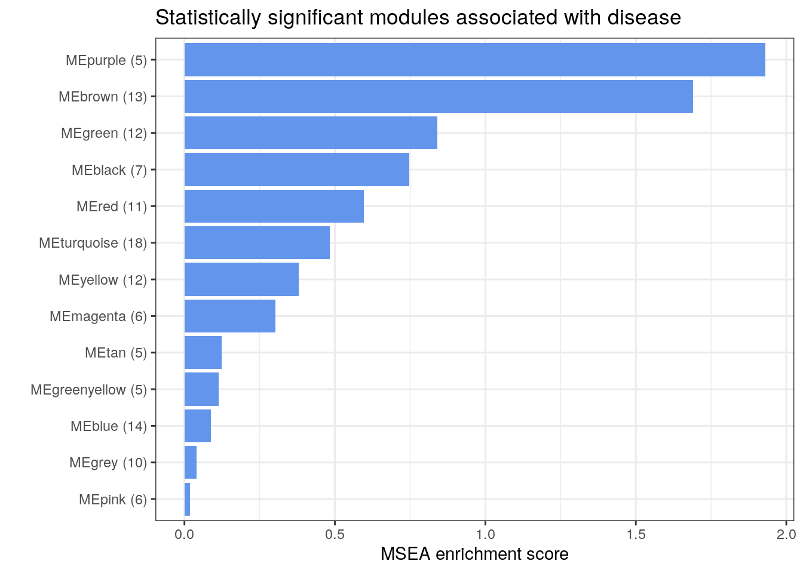

17 Microbe Set Enrichment Analysis (MSEA)
Similar to gene set enrichment analyses for genes (A 2005), an obvious next step following differential abundance analysis in microbiome studies is to conduct enrichment analysis for microbe sets, known as microbe set enrichment analysis (MSEA) (Y 2020). Similar to GSEA, the primary goal of MSEA is to detect the modest but coordinated changes in pre-specified sets of related microbial features. Such a set might include all the microbes in a specific pathway or microbial genes that have been shown to be co-regulated based on previously published studies. Like GSEA, MSEA aggregates the per-feature statistics across microbes within a microbe set. This corresponds to the hypothesis that many relevant phenotype differences are manifested by small but consistent changes in a set of features.
The goal of the MSEA approach is to determine if the members of S (microbe set) are randomly distributed throughout the ranked list of features (L) or primarily found at the top or bottom. We will use the R package gsEasy to conduct the MSEA test described by A (2005).
17.1 Input data for MSEA using species relative abundance data
In this chapter, we will use the publicly available Inflammatory Bowel Diseases (IBD) microbiome data from the integrative Human Microbiome Project (iHMP) available from the curatedMetagenomicData package (J 2019). We aim to conduct MSEA analysis based on both taxonomic profiles (species relative abundances) and functional profiles (pathway relative abundances).
17.2 Performing the MSEA analysis with species relative abundance data
We will first prepare the input feature table and sample metadata for differential abundance analysis using MaAsLin2 (H 2021). The ranked feature list from the differential abundance analysis serves as an input for the MSEA.
##################
# Load iHMP data #
##################
library(curatedMetagenomicData)
library(dplyr)
se_relative <- sampleMetadata |>
filter(study_name == "HMP_2019_ibdmdb") |>
returnSamples("relative_abundance", rownames = "short")
##########################
# Create sample metadata #
##########################
sample_metadata <-
colData(se_relative) %>%
as.data.frame() %>% filter(visit_number == 1) %>%
.[, c("age", "disease", "antibiotics_current_use")]
#################
# Set reference #
#################
sample_metadata$disease <- as.factor(sample_metadata$disease)
sample_metadata$disease <- relevel(sample_metadata$disease, 'healthy')
###########################
# Create species features #
###########################
feature_species_t <- as.data.frame(assay(se_relative))
rownames(feature_species_t) <- sub('.*s__', '', rownames(feature_species_t))
##############################
# Subset to baseline samples #
##############################
feature_species <- as.data.frame(t(feature_species_t))
feature_species <- feature_species[rownames(sample_metadata),]
feature_species <- feature_species / 100
rm(feature_species_t); rm(se_relative)In the next step, we will use MaAsLin2 to fit a multivariable regression model for testing the association between microbial species abundance versus IBD diagnosis. The analysis method we use here is “LM”, which is the default setting. We also adjust for age and antibiotic usage, following the original study.
library(Maaslin2)
fit_data = Maaslin2(input_data = feature_species,
input_metadata = sample_metadata,
normalization = "NONE",
output = "output_species",
fixed_effects = c("disease", "age", "antibiotics_current_use"))
## [1] "Creating output folder"
## [1] "Creating output feature tables folder"
## [1] "Creating output fits folder"
## [1] "Creating output figures folder"
## 2024-04-26 15:42:19.186455 INFO::Writing function arguments to log file
## 2024-04-26 15:42:19.200922 INFO::Verifying options selected are valid
## 2024-04-26 15:42:19.227448 INFO::Determining format of input files
## 2024-04-26 15:42:19.227997 INFO::Input format is data samples as rows and metadata samples as rows
## 2024-04-26 15:42:19.233478 INFO::Formula for fixed effects: expr ~ disease + age + antibiotics_current_use
## 2024-04-26 15:42:19.234131 INFO::Factor detected for categorial metadata 'disease'. Provide a reference argument or manually set factor ordering to change reference level.
## 2024-04-26 15:42:19.234725 INFO::Filter data based on min abundance and min prevalence
## 2024-04-26 15:42:19.235139 INFO::Total samples in data: 136
## 2024-04-26 15:42:19.235539 INFO::Min samples required with min abundance for a feature not to be filtered: 13.600000
## 2024-04-26 15:42:19.241186 INFO::Total filtered features: 452
## 2024-04-26 15:42:19.241845 INFO::Filtered feature names from abundance and prevalence filtering: Clostridiales.bacterium.1_7_47FAA, Enterocloster.asparagiformis, Gordonibacter.pamelaeae, Firmicutes.bacterium.CAG.424, Adlercreutzia.equolifaciens, Anaerotruncus.sp..CAG.528, Parabacteroides.johnsonii, Erysipelothrix.larvae, Proteus.mirabilis, Bacteroides.sp..43_108, Blautia.producta, Tyzzerella.nexilis, Ruminococcus.obeum.CAG.39, X.Clostridium..scindens, Blautia.hydrogenotrophica, Lachnoclostridium.sp..An181, Candidatus.Stoquefichus.sp..KLE1796, Gemmiger.sp..An87, Lachnoclostridium.sp..An138, Harryflintia.acetispora, Streptococcus.thermophilus, Prevotella.buccae, Dorea.sp..CAG.317, Proteus.vulgaris, Proteus.hauseri, X.Clostridium..spiroforme, Blautia.hansenii, Eubacterium.sp..OM08.24, Parabacteroides.sp..CAG.409, Desulfovibrio.piger, Clostridium.sp..CAG.242, Pseudoflavonifractor.sp..An184, Clostridiales.bacterium.CHKCI006, Pseudoflavonifractor.sp..An85, Christensenella.minuta, Bifidobacterium.catenulatum, Slackia.isoflavoniconvertens, Alistipes.inops, Haemophilus.pittmaniae, Amedibacillus.dolichus, Eubacterium.dolichum.CAG.375, Turicibacter.sanguinis, Lactobacillus.delbrueckii, Aeriscardovia.aeriphila, Firmicutes.bacterium.CAG.145, Klebsiella.quasipneumoniae, Cutibacterium.granulosum, Methanobrevibacter.smithii, Porphyromonas.asaccharolytica, Clostridium.perfringens, Clostridium.paraputrificum, Limosilactobacillus.fermentum, Prevotella.sp..CAG.279, Fusobacterium.ulcerans, Bifidobacterium.breve, Prevotella.sp..CAG.891, Lactococcus.piscium, Klebsiella.oxytoca, Citrobacter.freundii, Citrobacter.braakii, Bifidobacterium.animalis, Citrobacter.youngae, Lactobacillus.acidophilus, Anaeroglobus.geminatus, Bifidobacterium.dentium, Clostridium.neonatale, Clostridioides.difficile, Enterococcus.faecium, Morganella.morganii, Streptococcus.oralis, Klebsiella.michiganensis, Clostridium.sp..chh4.2, Bacteroides.nordii, Klebsiella.aerogenes, Leclercia.adecarboxylata, Enterobacter.mori, Kluyvera.ascorbata, Pseudoflavonifractor.capillosus, Ruminococcaceae.bacterium.D5, Raoultella.planticola, Roseburia.sp..CAG.303, Alloscardovia.omnicolens, Eubacterium.sp..CAG.180, Eubacterium.sp..CAG.274, Cutibacterium.acnes, Dialister.sp..CAG.357, Bacteroides.oleiciplenus, Coprobacter.secundus, Kocuria.palustris, Acinetobacter.lwoffii, Micrococcus.lylae, Pararheinheimera.mesophila, Desulfovibrionaceae.bacterium, Massilimicrobiota.timonensis, Fretibacterium.fastidiosum, Streptococcus.vestibularis, Clostridium.sp..CAG.411, Megamonas.funiformis, Megamonas.hypermegale, Megamonas.funiformis.CAG.377, Streptococcus.gordonii, Coprobacillus.cateniformis, Prevotella.colorans, Prevotella.buccalis, Anaerofustis.stercorihominis, Latilactobacillus.sakei, Clostridium.disporicum, Ruminococcus.sp..CAG.330, Streptococcus.agalactiae, Aggregatibacter.segnis, Fusobacterium.nucleatum, Bifidobacterium.pseudolongum, Allisonella.histaminiformans, Prevotella.bivia, Clostridium.sp..CAG.590, Ruminococcus.callidus, Holdemanella.biformis, Escherichia.marmotae, Terrisporobacter.othiniensis, Porphyromonas.somerae, Prevotella.salivae, Citrobacter.amalonaticus, Ligilactobacillus.salivarius, Megasphaera.micronuciformis, Neisseria.sp..oral.taxon.014, Anaerostipes.caccae, Blautia.argi, Escherichia.albertii, Prevotella.disiens, Porphyromonas.uenonis, Peptococcus.niger, Bacteroides.sp..CAG.144, Eubacterium.sp..An11, Blautia.coccoides, Oxalobacter.formigenes, Tractidigestivibacter.scatoligenes, Dialister.pneumosintes, Megasphaera.sp..DISK.18, Clostridium.sp..CAG.167, Hafnia.paralvei, Alistipes.onderdonkii, Coprobacter.sp., Corynebacterium.matruchotii, Bacteroides.stercorirosoris, Staphylococcus.epidermidis, Parabacteroides.goldsteinii, Roseburia.sp..CAG.182, Oscillibacter.sp..PC13, Firmicutes.bacterium.CAG.110, Prevotella.sp..885, Parvimonas.micra, Peptostreptococcus.stomatis, Moraxella.osloensis, Enhydrobacter.aerosaccus, Micrococcus.luteus, Micrococcus.aloeverae, Dialister.micraerophilus, Campylobacter.concisus, Megasphaera.sp..MJR8396C, Cloacibacillus.porcorum, Desulfovibrio.fairfieldensis, Phascolarctobacterium.sp..CAG.266, Rikenella.microfusus, Roseburia.sp..CAG.309, Flavonifractor.sp..An10, Victivallis.vadensis, Firmicutes.bacterium.CAG.95, Enorma.massiliensis, Citrobacter.pasteurii, Streptococcus.salivarius.CAG.79, Veillonella.seminalis, Enterococcus.faecalis, Streptococcus.mitis, Butyricicoccus.pullicaecorum, Prevotella.corporis, Lachnoclostridium.sp..An131, Lachnoclostridium.sp..An118, X.Clostridium..methylpentosum, Haemophilus.parahaemolyticus, Neisseria.flavescens, Veillonella.rogosae, Neisseria.subflava, Sharpea.azabuensis, Anaerofilum.sp..An201, Romboutsia.ilealis, Fusobacterium.periodonticum, Lachnoclostridium.sp..An14, Flavonifractor.sp..An100, Clostridium.sp..CAG.253, Arthrospira.platensis, Lactobacillus.amylovorus, Limosilactobacillus.oris, Streptococcus.lutetiensis, Weissella.cibaria, Rothia.mucilaginosa, Streptococcus.pasteurianus, Prevotella.melaninogenica, Prevotella.jejuni, Veillonella.tobetsuensis, Streptococcus.sp..M334, Actinomyces.sp..ICM47, Streptococcus.sp..A12, Clostridium.sp..CAG.678, Candidatus.Methanomassiliicoccus.intestinalis, Candidatus.Gastranaerophilales.bacterium, Prevotella.denticola, Leuconostoc.lactis, Prevotella.oris, Prevotella.dentalis, X.Eubacterium..infirmum, Shuttleworthia.satelles, Prevotella.nigrescens, Enterococcus.hirae, Adlercreutzia.caecimuris, Citrobacter.portucalensis, Raoultella.ornithinolytica, Dysgonomonas.mossii, Firmicutes.bacterium.CAG.646, Streptococcus.gallolyticus, Christensenella.hongkongensis, Lactobacillus.paragasseri, Lactobacillus.gasseri, Peptostreptococcus.anaerobius, Acinetobacter.ursingii, Lactococcus.lactis, Odoribacter.laneus, Haemophilus.sputorum, Peptoniphilus.harei, Pediococcus.acidilactici, Fusobacterium.gonidiaformans, Fusobacterium.equinum, Leuconostoc.garlicum, Campylobacter.showae, Aeromonas.hydrophila, Aeromonas.dhakensis, Prevotella.stercorea, Phascolarctobacterium.succinatutens, Prevotella.sp..AM42.24, Blastocystis.sp..subtype.1, Bifidobacterium.angulatum, Prevotella.timonensis, Butyrivibrio.crossotus, Limosilactobacillus.vaginalis, Ligilactobacillus.ruminis, Weissella.confusa, Streptococcus.mutans, Clostridium.celatum, Streptococcus.australis, Streptococcus.sanguinis, Schaalia.turicensis, Peptoniphilus.duerdenii, Clostridium.baratii, Streptococcus.sp..F0442, Prevotella.sp..CAG.520, Cronobacter.sakazakii, Actinomyces.urogenitalis, Actinomyces.graevenitzii, Parvimonas.sp..oral.taxon.110, Eikenella.corrodens, Parvimonas.sp..oral.taxon.393, Anaerococcus.vaginalis, Gemella.asaccharolytica, Lachnospiraceae.bacterium.2_1_46FAA, Veillonella.sp..CAG.933, Lacticaseibacillus.rhamnosus, Campylobacter.upsaliensis, Lachnospiraceae.bacterium.oral.taxon.096, Campylobacter.gracilis, Gemmiger.sp..An50, Scardovia.wiggsiae, Limosilactobacillus.reuteri, Enterococcus.avium, Enterococcus.thailandicus, Paucilactobacillus.vaccinostercus, Enterococcus.casseliflavus, Bifidobacterium.pullorum, Actinomyces.sp..oral.taxon.180, Enterococcus.sp..3H8_DIV0648, Enterococcus.gallinarum, Varibaculum.cambriense, Veillonella.rodentium, Lactobacillus.crispatus, Lawsonella.clevelandensis, Porphyromonas.sp..HMSC065F10, Citrobacter.werkmanii, Lactobacillus.johnsonii, Sarcina.ventriculi, Streptococcus.macedonicus, Klebsiella.variicola.CAG.634, Phytobacter.palmae, Enterococcus.raffinosus, Prevotella.amnii, Catenibacterium.mitsuokai, Saccharomyces.cerevisiae, Eubacterium.limosum, Staphylococcus.hominis, Alloprevotella.tannerae, Haemophilus.paraphrohaemolyticus, X.Eubacterium..brachy, Ruminococcus.sp..CAG.403, Fannyhessea.vaginae, Cronobacter.malonaticus, Streptococcus.infantis, Actinomyces.sp..oral.taxon.181, Clostridium.butyricum, Abiotrophia.sp..HMSC24B09, Gemella.haemolysans, Firmicutes.bacterium.CAG.170, Solobacterium.moorei, Pseudomonas.guguanensis, Lactobacillus.jensenii, Clostridium.cadaveris, Aggregatibacter.sp..oral.taxon.458, Anaerocolumna.aminovalerica, Clostridium.sporogenes, Clostridium.botulinum, Campylobacter.hominis, Murimonas.intestini, Clostridium.sp..CAG.964, Pediococcus.pentosaceus, Corynebacterium.amycolatum, Parvimonas.sp..KA00067, Bacteroidales.bacterium.KA00251, Fusobacterium.mortiferum, Lacrimispora.celerecrescens, Butyrivibrio.sp..CAG.318, Cellulosilyticum.lentocellum, Eubacteriaceae.bacterium.CHKCI005, Eubacterium.coprostanoligenes, Firmicutes.bacterium.CAG.238, Dysgonomonas.gadei, Bacteroides.fluxus, Bacteroides.sp..D2, Citrobacter.farmeri, Gemella.sanguinis, Sanguibacteroides.justesenii, Porphyromonas.endodontalis, Streptococcus.peroris, Actinomyces.sp..HPA0247, Lactiplantibacillus.plantarum, Limosilactobacillus.mucosae, Providencia.alcalifaciens, Robinsoniella.sp..RHS, Fructilactobacillus.sanfranciscensis, Prevotella.sp..CAG.1185, Peptoniphilus.lacrimalis, Gemella.morbillorum, Frigoribacterium.sp..Leaf8, Clostridium.sp..MSTE9, X.Clostridium..hylemonae, Treponema.lecithinolyticum, Faecalicoccus.pleomorphus, Flavonifractor.sp..An306, Prevotella.oralis, Peptoniphilus.sp..BV3C26, Brachyspira.pilosicoli, Bacteroides.sp..OM08.11, Proteus.penneri, Corynebacterium.kroppenstedtii, Faecalitalea.cylindroides, Wohlfahrtiimonas.chitiniclastica, Bacteroides.clarus, Acidaminococcus.sp..CAG.542, Peptoniphilus.coxii, Alistipes.timonensis, Clostridium.sp..D5, Prevotella.bergensis, Ruminococcus.sp..CAG.563, Kluyvera.cryocrescens, Ezakiella.coagulans, X.Bacteroides..pectinophilus, Bacteroides.sp..CAG.661, Bacteroides.sp..CAG.598, Comamonas.kerstersii, Firmicutes.bacterium.CAG.534, Clostridium.sp..CAG.413, Schaalia.odontolytica, Streptococcus.cristatus, Actinomyces.sp..HMSC035G02, Lancefieldella.rimae, Streptococcus.milleri, Finegoldia.magna, Lancefieldella.parvula, Prevotella.oulorum, Dellaglioa.algida, Lactonifactor.longoviformis, Hafnia.alvei, Neisseria.cinerea, Corynebacterium.oculi, Ruminococcus.sp..CAG.488, Corynebacterium.accolens, Prevotella.sp..S7.1.8, Campylobacter.ureolyticus, Atopobium.deltae, Gleimia.europaea, Mitsuokella.jalaludinii, Mitsuokella.multacida, Peptoniphilus.sp..HMSC062D09, Anaerococcus.lactolyticus, Granulicatella.adiacens, Anaerosporobacter.mobilis, Clostridium.sp..7_2_43FAA, Kosakonia.sacchari, Staphylococcus.aureus, Ligilactobacillus.animalis, Weissella.viridescens, Dysgonomonas.sp..37.18, Serratia.liquefaciens, Streptococcus.sp..HPH0090, Anaerostipes.sp..494a, Lactococcus.petauri, Obesumbacterium.proteus, Fusobacterium.sp..oral.taxon.370, X.Butyribacterium..methylotrophicum, Phocaeicola.sartorii, Bacteroides.sp..CAG.530, Megasphaera.elsdenii, Prevotella.sp..CAG.1092, Fusobacterium.sp..CAG.439, Anaeromassilibacillus.sp..An172, Aggregatibacter.aphrophilus, Aerococcus.urinaeequi, Pseudomonas.fragi, Thermoleophilum.album, Bacteroides.sp..CAG.633, Serratia.marcescens, Actinotignum.timonense, Fusobacterium.naviforme, Haemophilus.influenzae, Prevotella.intermedia, Bacteroidetes.oral.taxon.274, Citrobacter.europaeus, Bifidobacterium.asteroides, Enterococcus.durans, Enterococcus.pseudoavium, Microvirgula.aerodenitrificans, Yersinia.frederiksenii, Faecalicatena.orotica, Enterococcus.asini, Paenibacillus.macerans, Bavariicoccus.seileri, Kluyvera.georgiana, Prevotella.histicola, Prevotella.pallens, Chlamydia.ibidis, Enterococcus.mundtii, Anaerostipes.sp..992a, Actinobaculum.sp..oral.taxon.183, Lachnoclostridium.sp..An298, Haemophilus.haemolyticus, Enterococcus.dispar, Atopobium.minutum
## 2024-04-26 15:42:19.244453 INFO::Total filtered features with variance filtering: 0
## 2024-04-26 15:42:19.244944 INFO::Filtered feature names from variance filtering:
## 2024-04-26 15:42:19.245341 INFO::Running selected normalization method: NONE
## 2024-04-26 15:42:19.245801 INFO::Applying z-score to standardize continuous metadata
## 2024-04-26 15:42:19.249876 INFO::Running selected transform method: LOG
## 2024-04-26 15:42:19.252637 INFO::Running selected analysis method: LM
## 2024-04-26 15:42:19.256168 INFO::Fitting model to feature number 1, Phocaeicola.vulgatus
## 2024-04-26 15:42:19.262338 INFO::Fitting model to feature number 2, Bacteroides.uniformis
## 2024-04-26 15:42:19.264696 INFO::Fitting model to feature number 3, Bacteroides.thetaiotaomicron
## 2024-04-26 15:42:19.26686 INFO::Fitting model to feature number 4, Faecalibacterium.prausnitzii
## 2024-04-26 15:42:19.269037 INFO::Fitting model to feature number 5, Roseburia.faecis
## 2024-04-26 15:42:19.271161 INFO::Fitting model to feature number 6, Bacteroides.caccae
## 2024-04-26 15:42:19.273333 INFO::Fitting model to feature number 7, Enterocloster.clostridioformis
## 2024-04-26 15:42:19.27547 INFO::Fitting model to feature number 8, Bacteroides.fragilis
## 2024-04-26 15:42:19.277666 INFO::Fitting model to feature number 9, Fusicatenibacter.saccharivorans
## 2024-04-26 15:42:19.279809 INFO::Fitting model to feature number 10, Flavonifractor.plautii
## 2024-04-26 15:42:19.282003 INFO::Fitting model to feature number 11, Dialister.invisus
## 2024-04-26 15:42:19.284149 INFO::Fitting model to feature number 12, Ruminococcus.bicirculans
## 2024-04-26 15:42:19.286327 INFO::Fitting model to feature number 13, Blautia.sp..CAG.257
## 2024-04-26 15:42:19.288487 INFO::Fitting model to feature number 14, X.Ruminococcus..gnavus
## 2024-04-26 15:42:19.290629 INFO::Fitting model to feature number 15, Dorea.longicatena
## 2024-04-26 15:42:19.292797 INFO::Fitting model to feature number 16, Anaerobutyricum.hallii
## 2024-04-26 15:42:19.294929 INFO::Fitting model to feature number 17, Enterocloster.bolteae
## 2024-04-26 15:42:19.29708 INFO::Fitting model to feature number 18, Eubacterium.sp..CAG.38
## 2024-04-26 15:42:19.299214 INFO::Fitting model to feature number 19, Lacrimispora.saccharolytica
## 2024-04-26 15:42:19.301364 INFO::Fitting model to feature number 20, Intestinimonas.butyriciproducens
## 2024-04-26 15:42:19.303517 INFO::Fitting model to feature number 21, Anaerostipes.hadrus
## 2024-04-26 15:42:19.305683 INFO::Fitting model to feature number 22, Anaerotignum.lactatifermentans
## 2024-04-26 15:42:19.30781 INFO::Fitting model to feature number 23, Ruthenibacterium.lactatiformans
## 2024-04-26 15:42:19.309987 INFO::Fitting model to feature number 24, Lawsonibacter.asaccharolyticus
## 2024-04-26 15:42:19.312128 INFO::Fitting model to feature number 25, Clostridium.bolteae.CAG.59
## 2024-04-26 15:42:19.314282 INFO::Fitting model to feature number 26, X.Clostridium..symbiosum
## 2024-04-26 15:42:19.316407 INFO::Fitting model to feature number 27, Anaerotruncus.colihominis
## 2024-04-26 15:42:19.318591 INFO::Fitting model to feature number 28, Agathobaculum.butyriciproducens
## 2024-04-26 15:42:19.320737 INFO::Fitting model to feature number 29, Escherichia.coli
## 2024-04-26 15:42:19.322901 INFO::Fitting model to feature number 30, Eisenbergiella.massiliensis
## 2024-04-26 15:42:19.325092 INFO::Fitting model to feature number 31, Enterocloster.citroniae
## 2024-04-26 15:42:19.32721 INFO::Fitting model to feature number 32, Bacteroides.stercoris
## 2024-04-26 15:42:19.329369 INFO::Fitting model to feature number 33, Monoglobus.pectinilyticus
## 2024-04-26 15:42:19.331514 INFO::Fitting model to feature number 34, Alistipes.putredinis
## 2024-04-26 15:42:19.333691 INFO::Fitting model to feature number 35, Parabacteroides.distasonis
## 2024-04-26 15:42:19.335853 INFO::Fitting model to feature number 36, Roseburia.hominis
## 2024-04-26 15:42:19.338041 INFO::Fitting model to feature number 37, Bifidobacterium.longum
## 2024-04-26 15:42:19.340195 INFO::Fitting model to feature number 38, X.Eubacterium..siraeum
## 2024-04-26 15:42:19.342367 INFO::Fitting model to feature number 39, Parabacteroides.merdae
## 2024-04-26 15:42:19.344515 INFO::Fitting model to feature number 40, Roseburia.inulinivorans
## 2024-04-26 15:42:19.346697 INFO::Fitting model to feature number 41, Bacteroides.cellulosilyticus
## 2024-04-26 15:42:19.348883 INFO::Fitting model to feature number 42, Bacteroides.ovatus
## 2024-04-26 15:42:19.351033 INFO::Fitting model to feature number 43, Blautia.wexlerae
## 2024-04-26 15:42:19.353198 INFO::Fitting model to feature number 44, Bifidobacterium.adolescentis
## 2024-04-26 15:42:19.355338 INFO::Fitting model to feature number 45, Lachnospira.eligens
## 2024-04-26 15:42:19.357568 INFO::Fitting model to feature number 46, X.Clostridium..leptum
## 2024-04-26 15:42:19.359747 INFO::Fitting model to feature number 47, Eggerthella.lenta
## 2024-04-26 15:42:19.361911 INFO::Fitting model to feature number 48, Bacteroides.xylanisolvens
## 2024-04-26 15:42:19.364031 INFO::Fitting model to feature number 49, Phocaeicola.dorei
## 2024-04-26 15:42:19.366245 INFO::Fitting model to feature number 50, Enterocloster.lavalensis
## 2024-04-26 15:42:19.368408 INFO::Fitting model to feature number 51, X.Eubacterium..rectale
## 2024-04-26 15:42:19.37056 INFO::Fitting model to feature number 52, Akkermansia.muciniphila
## 2024-04-26 15:42:19.372718 INFO::Fitting model to feature number 53, Acidaminococcus.intestini
## 2024-04-26 15:42:19.374861 INFO::Fitting model to feature number 54, X.Ruminococcus..torques
## 2024-04-26 15:42:19.377035 INFO::Fitting model to feature number 55, Bacteroides.salyersiae
## 2024-04-26 15:42:19.379162 INFO::Fitting model to feature number 56, Sellimonas.intestinalis
## 2024-04-26 15:42:19.381314 INFO::Fitting model to feature number 57, Bacteroides.faecis
## 2024-04-26 15:42:19.383575 INFO::Fitting model to feature number 58, Roseburia.intestinalis
## 2024-04-26 15:42:19.38575 INFO::Fitting model to feature number 59, Collinsella.aerofaciens
## 2024-04-26 15:42:19.387912 INFO::Fitting model to feature number 60, Bacteroides.intestinalis
## 2024-04-26 15:42:19.39008 INFO::Fitting model to feature number 61, Bacteroides.faecis.CAG.32
## 2024-04-26 15:42:19.392217 INFO::Fitting model to feature number 62, X.Ruminococcus..lactaris
## 2024-04-26 15:42:19.394387 INFO::Fitting model to feature number 63, Prevotella.copri
## 2024-04-26 15:42:19.396545 INFO::Fitting model to feature number 64, Eisenbergiella.tayi
## 2024-04-26 15:42:19.398757 INFO::Fitting model to feature number 65, Klebsiella.pneumoniae
## 2024-04-26 15:42:19.400956 INFO::Fitting model to feature number 66, Intestinibacter.bartlettii
## 2024-04-26 15:42:19.403095 INFO::Fitting model to feature number 67, Erysipelatoclostridium.ramosum
## 2024-04-26 15:42:19.405269 INFO::Fitting model to feature number 68, Barnesiella.intestinihominis
## 2024-04-26 15:42:19.407415 INFO::Fitting model to feature number 69, Blautia.obeum
## 2024-04-26 15:42:19.409568 INFO::Fitting model to feature number 70, Bacteroides.finegoldii
## 2024-04-26 15:42:19.411697 INFO::Fitting model to feature number 71, Parasutterella.excrementihominis
## 2024-04-26 15:42:19.413883 INFO::Fitting model to feature number 72, Phascolarctobacterium.faecium
## 2024-04-26 15:42:19.416033 INFO::Fitting model to feature number 73, Lachnospira.pectinoschiza
## 2024-04-26 15:42:19.418217 INFO::Fitting model to feature number 74, Clostridium.sp..CAG.58
## 2024-04-26 15:42:19.420363 INFO::Fitting model to feature number 75, Bilophila.wadsworthia
## 2024-04-26 15:42:19.422583 INFO::Fitting model to feature number 76, Turicimonas.muris
## 2024-04-26 15:42:19.424797 INFO::Fitting model to feature number 77, Proteobacteria.bacterium.CAG.139
## 2024-04-26 15:42:19.426949 INFO::Fitting model to feature number 78, Anaeromassilibacillus.sp..An250
## 2024-04-26 15:42:19.429094 INFO::Fitting model to feature number 79, Hungatella.hathewayi
## 2024-04-26 15:42:19.431283 INFO::Fitting model to feature number 80, Alistipes.finegoldii
## 2024-04-26 15:42:19.433509 INFO::Fitting model to feature number 81, Ruminococcus.bromii
## 2024-04-26 15:42:19.435681 INFO::Fitting model to feature number 82, Odoribacter.splanchnicus
## 2024-04-26 15:42:19.437879 INFO::Fitting model to feature number 83, Butyricimonas.virosa
## 2024-04-26 15:42:19.440024 INFO::Fitting model to feature number 84, Oscillibacter.sp..CAG.241
## 2024-04-26 15:42:19.442231 INFO::Fitting model to feature number 85, Alistipes.indistinctus
## 2024-04-26 15:42:19.444396 INFO::Fitting model to feature number 86, Coprococcus.comes
## 2024-04-26 15:42:19.446597 INFO::Fitting model to feature number 87, Gemmiger.formicilis
## 2024-04-26 15:42:19.448794 INFO::Fitting model to feature number 88, Holdemania.filiformis
## 2024-04-26 15:42:19.450975 INFO::Fitting model to feature number 89, Firmicutes.bacterium.CAG.83
## 2024-04-26 15:42:19.453164 INFO::Fitting model to feature number 90, Dorea.formicigenerans
## 2024-04-26 15:42:19.455311 INFO::Fitting model to feature number 91, Collinsella.intestinalis
## 2024-04-26 15:42:19.457514 INFO::Fitting model to feature number 92, Oscillibacter.sp..57_20
## 2024-04-26 15:42:19.459681 INFO::Fitting model to feature number 93, Firmicutes.bacterium.CAG.94
## 2024-04-26 15:42:19.461878 INFO::Fitting model to feature number 94, Dielma.fastidiosa
## 2024-04-26 15:42:19.464031 INFO::Fitting model to feature number 95, Roseburia.sp..CAG.471
## 2024-04-26 15:42:19.466261 INFO::Fitting model to feature number 96, X.Clostridium..innocuum
## 2024-04-26 15:42:19.468399 INFO::Fitting model to feature number 97, Haemophilus.parainfluenzae
## 2024-04-26 15:42:19.470573 INFO::Fitting model to feature number 98, Veillonella.dispar
## 2024-04-26 15:42:19.472758 INFO::Fitting model to feature number 99, Veillonella.parvula
## 2024-04-26 15:42:19.474932 INFO::Fitting model to feature number 100, Veillonella.infantium
## 2024-04-26 15:42:19.477107 INFO::Fitting model to feature number 101, Streptococcus.salivarius
## 2024-04-26 15:42:19.479239 INFO::Fitting model to feature number 102, Enterocloster.aldenensis
## 2024-04-26 15:42:19.481458 INFO::Fitting model to feature number 103, Veillonella.atypica
## 2024-04-26 15:42:19.483606 INFO::Fitting model to feature number 104, Phocaeicola.plebeius
## 2024-04-26 15:42:19.485782 INFO::Fitting model to feature number 105, Paraprevotella.xylaniphila
## 2024-04-26 15:42:19.48795 INFO::Fitting model to feature number 106, Bacteroides.eggerthii
## 2024-04-26 15:42:19.49018 INFO::Fitting model to feature number 107, Alistipes.shahii
## 2024-04-26 15:42:19.492333 INFO::Fitting model to feature number 108, Butyricimonas.synergistica
## 2024-04-26 15:42:19.494537 INFO::Fitting model to feature number 109, Haemophilus.sp..HMSC71H05
## 2024-04-26 15:42:19.496729 INFO::Fitting model to feature number 110, Eubacterium.ramulus
## 2024-04-26 15:42:19.498899 INFO::Fitting model to feature number 111, Coprobacter.fastidiosus
## 2024-04-26 15:42:19.501078 INFO::Fitting model to feature number 112, Lactobacillus.rogosae
## 2024-04-26 15:42:19.50335 INFO::Fitting model to feature number 113, Phocaeicola.massiliensis
## 2024-04-26 15:42:19.506095 INFO::Fitting model to feature number 114, Streptococcus.parasanguinis
## 2024-04-26 15:42:19.508753 INFO::Fitting model to feature number 115, Ruminococcaceae.bacterium.D16
## 2024-04-26 15:42:19.510998 INFO::Fitting model to feature number 116, Veillonella.sp..T11011.6
## 2024-04-26 15:42:19.513233 INFO::Fitting model to feature number 117, Klebsiella.variicola
## 2024-04-26 15:42:19.515407 INFO::Fitting model to feature number 118, Bacteroides.galacturonicus
## 2024-04-26 15:42:19.517602 INFO::Fitting model to feature number 119, Clostridium.sp..CAG.299
## 2024-04-26 15:42:19.519759 INFO::Fitting model to feature number 120, Eubacterium.ventriosum
## 2024-04-26 15:42:19.521944 INFO::Fitting model to feature number 121, Bifidobacterium.bifidum
## 2024-04-26 15:42:19.524097 INFO::Fitting model to feature number 122, Bifidobacterium.pseudocatenulatum
## 2024-04-26 15:42:19.526297 INFO::Fitting model to feature number 123, Coprococcus.eutactus
## 2024-04-26 15:42:19.528462 INFO::Fitting model to feature number 124, Eubacterium.sp..CAG.251
## 2024-04-26 15:42:19.530668 INFO::Fitting model to feature number 125, Phocaeicola.coprocola
## 2024-04-26 15:42:19.532842 INFO::Fitting model to feature number 126, Paraprevotella.clara
## 2024-04-26 15:42:19.535021 INFO::Fitting model to feature number 127, Coprococcus.catus
## 2024-04-26 15:42:19.554808 INFO::Counting total values for each feature
## 2024-04-26 15:42:19.566056 INFO::Writing filtered data to file output_species/features/filtered_data.tsv
## 2024-04-26 15:42:19.578534 INFO::Writing filtered, normalized data to file output_species/features/filtered_data_norm.tsv
## 2024-04-26 15:42:19.590648 INFO::Writing filtered, normalized, transformed data to file output_species/features/filtered_data_norm_transformed.tsv
## 2024-04-26 15:42:19.608006 INFO::Writing residuals to file output_species/fits/residuals.rds
## 2024-04-26 15:42:19.614069 INFO::Writing fitted values to file output_species/fits/fitted.rds
## 2024-04-26 15:42:19.619381 INFO::Writing all results to file (ordered by increasing q-values): output_species/all_results.tsv
## 2024-04-26 15:42:19.622227 INFO::Writing the significant results (those which are less than or equal to the threshold of 0.250000 ) to file (ordered by increasing q-values): output_species/significant_results.tsv
## 2024-04-26 15:42:19.623025 INFO::Writing heatmap of significant results to file: output_species/heatmap.pdf
## 2024-04-26 15:42:19.727497 INFO::Writing association plots (one for each significant association) to output folder: output_species
## 2024-04-26 15:42:19.730246 INFO::Plotting associations from most to least significant, grouped by metadata
## 2024-04-26 15:42:19.730787 INFO::Plotting data for metadata number 1, age
## 2024-04-26 15:42:19.731724 INFO::Creating scatter plot for continuous data, age vs Alistipes.indistinctus
## 2024-04-26 15:42:19.905355 INFO::Creating scatter plot for continuous data, age vs Ruminococcus.bicirculans
## 2024-04-26 15:42:20.110852 INFO::Creating scatter plot for continuous data, age vs Lacrimispora.saccharolytica
## 2024-04-26 15:42:20.27071 INFO::Creating scatter plot for continuous data, age vs Ruminococcus.bromii
## 2024-04-26 15:42:20.417793 INFO::Creating scatter plot for continuous data, age vs Bifidobacterium.pseudocatenulatum
## 2024-04-26 15:42:20.538164 INFO::Creating scatter plot for continuous data, age vs X.Ruminococcus..gnavus
## 2024-04-26 15:42:20.659052 INFO::Creating scatter plot for continuous data, age vs Lachnospira.eligens
## 2024-04-26 15:42:20.77854 INFO::Creating scatter plot for continuous data, age vs Haemophilus.parainfluenzae
## 2024-04-26 15:42:20.906067 INFO::Creating scatter plot for continuous data, age vs Butyricimonas.virosa
## 2024-04-26 15:42:21.026894 INFO::Creating scatter plot for continuous data, age vs Lawsonibacter.asaccharolyticus
## 2024-04-26 15:42:21.161532 INFO::Creating scatter plot for continuous data, age vs X.Eubacterium..siraeum
## 2024-04-26 15:42:21.279617 INFO::Creating scatter plot for continuous data, age vs Butyricimonas.synergistica
## 2024-04-26 15:42:21.398479 INFO::Creating scatter plot for continuous data, age vs Monoglobus.pectinilyticus
## 2024-04-26 15:42:21.517264 INFO::Creating scatter plot for continuous data, age vs Veillonella.atypica
## 2024-04-26 15:42:23.098467 INFO::Plotting data for metadata number 2, disease
## 2024-04-26 15:42:23.099674 INFO::Creating boxplot for categorical data, disease vs Alistipes.putredinis
## 2024-04-26 15:42:23.24581 INFO::Creating boxplot for categorical data, disease vs Gemmiger.formicilis
## 2024-04-26 15:42:23.367666 INFO::Creating boxplot for categorical data, disease vs X.Ruminococcus..torques
## 2024-04-26 15:42:23.477417 INFO::Creating boxplot for categorical data, disease vs Ruminococcus.bicirculans
## 2024-04-26 15:42:23.588362 INFO::Creating boxplot for categorical data, disease vs Sellimonas.intestinalis
## 2024-04-26 15:42:23.699883 INFO::Creating boxplot for categorical data, disease vs X.Clostridium..leptum
## 2024-04-26 15:42:23.810284 INFO::Creating boxplot for categorical data, disease vs Alistipes.shahii
## 2024-04-26 15:42:24.859931 INFO::Plotting data for metadata number 3, antibiotics_current_use
## 2024-04-26 15:42:24.861131 INFO::Creating boxplot for categorical data, antibiotics_current_use vs Coprobacter.fastidiosus
## 2024-04-26 15:42:24.970189 INFO::Creating boxplot for categorical data, antibiotics_current_use vs X.Eubacterium..rectale
## 2024-04-26 15:42:25.097372 INFO::Creating boxplot for categorical data, antibiotics_current_use vs Agathobaculum.butyriciproducensUnlike gene expression studies, we do not have well-defined signatures or modules for microbiome data. Here, we will construct data-driven modules using weighted gene co-expression network analysis (WGCNA) L (2023). We aim to ensure that the effect of disease and other covariates has been removed by working on the residuals. Following the WGCNA tutorial, our first step will be to check whether there are any outliers in our data.
library(WGCNA)
datExpr <- as.data.frame(t(fit_data$residuals))
gsg = goodSamplesGenes(datExpr, verbose = 3)
## Flagging genes and samples with too many missing values...
## ..step 1
## ..Excluding 6 samples from the calculation due to too many missing genes.
## ..step 2
gsg$allOK
## [1] FALSEIf the last statement returns TRUE, no outliers are identified. If not, we need to remove the outliers from the data.
if (!gsg$allOK)
{if (sum(!gsg$goodGenes) > 0)
printFlush(paste("Removing genes:", paste(names(datExpr)[!gsg$goodGenes], collapse = ", ")));
if (sum(!gsg$goodSamples) > 0)
printFlush(paste("Removing samples:", paste(rownames(datExpr)[!gsg$goodSamples], collapse =", ")))
datExpr = datExpr[gsg$goodSamples, gsg$goodGenes]
}
## Removing samples: CSM5MCVB_P, CSM79HNY_P, ESM5GEYY_P, ESM718U9_P, MSM6J2N6_P, MSM9VZLX_PAfter removing the outliers, we need to choose a suitable soft threshold parameter for creating the modules as part of the WGCNA algorithm. This power value must produce a graph similar to a scale-free network. We can use the mean connectivity graphic for the selection of this power parameter.
# Choose a set of soft threshold parameters
powers = c(c(1:20), seq(from = 22, to=30, by=2))
sft = pickSoftThreshold(datExpr, powerVector = powers, verbose = 5, dataIsExpr = TRUE, RsquaredCut = 0.30)
## pickSoftThreshold: will use block size 127.
## pickSoftThreshold: calculating connectivity for given powers...
## ..working on genes 1 through 127 of 127
## Power SFT.R.sq slope truncated.R.sq mean.k. median.k. max.k.
## 1 1 0.1790 -0.972 0.85700 15.00000 1.48e+01 23.0000
## 2 2 0.3450 -0.729 0.63500 2.95000 2.85e+00 5.6900
## 3 3 0.2400 -4.130 0.12700 0.80400 7.36e-01 2.6100
## 4 4 0.3100 -4.870 0.19900 0.29200 2.14e-01 1.6700
## 5 5 0.2150 -4.030 -0.00880 0.13700 7.02e-02 1.2200
## 6 6 0.1800 -2.930 -0.05130 0.07910 2.46e-02 0.9570
## 7 7 0.1380 -2.240 -0.10100 0.05320 9.33e-03 0.7900
## 8 8 0.2200 -2.790 -0.00259 0.03940 3.71e-03 0.6690
## 9 9 0.0872 -1.450 -0.09130 0.03100 1.50e-03 0.5760
## 10 10 0.1190 -1.630 -0.07660 0.02540 6.73e-04 0.5020
## 11 11 0.0562 -1.250 -0.03470 0.02130 2.66e-04 0.4410
## 12 12 0.1620 -2.150 -0.07720 0.01810 1.12e-04 0.3910
## 13 13 0.2120 -2.350 -0.00949 0.01560 4.84e-05 0.3480
## 14 14 0.2480 -2.410 0.04950 0.01360 2.12e-05 0.3110
## 15 15 0.2890 -2.470 0.15200 0.01190 9.53e-06 0.2810
## 16 16 0.3030 -2.420 0.18400 0.01050 4.33e-06 0.2580
## 17 17 0.2410 -2.380 0.02450 0.00933 1.98e-06 0.2380
## 18 18 0.3190 -2.640 0.15400 0.00830 9.03e-07 0.2180
## 19 19 0.3320 -2.600 0.17700 0.00741 4.03e-07 0.2010
## 20 20 0.2370 -2.050 0.02180 0.00664 1.70e-07 0.1840
## 21 22 0.2350 -2.000 0.07520 0.00536 3.40e-08 0.1560
## 22 24 0.2430 -2.230 0.09560 0.00437 6.98e-09 0.1310
## 23 26 0.2370 -2.120 0.26200 0.00358 1.44e-09 0.1110
## 24 28 0.2490 -2.080 0.26200 0.00294 2.93e-10 0.0937
## 25 30 0.2490 -2.290 0.30100 0.00243 5.67e-11 0.0791In this step, we will conduct a one-step module detection based on the selected soft threshold parameter selected above.
power = sft$powerEstimate
net = blockwiseModules(datExpr,
power = power,
corFnc="bicor",
corOptions=list(maxPOutliers=0.1),
networkType ="unsigned",
maxBlockSize = ncol(datExpr),
minModuleSize = 3,
TOMType = "unsigned",
reassignThreshold = 0,
mergeCutHeight = 0,
verbose = 3)
## Calculating module eigengenes block-wise from all genes
## Flagging genes and samples with too many missing values...
## ..step 1
## ..Working on block 1 .
## TOM calculation: adjacency..
## ..will not use multithreading.
## Fraction of slow calculations: 0.000000
## ..connectivity..
## ..matrix multiplication (system BLAS)..
## ..normalization..
## ..done.
## ....clustering..
## ....detecting modules..
## ....calculating module eigengenes..
## ....checking kME in modules..
## ..removing 3 genes from module 1 because their KME is too low.
## ..removing 3 genes from module 2 because their KME is too low.
## ..removing 2 genes from module 3 because their KME is too low.
## ..removing 1 genes from module 5 because their KME is too low.
## ..removing 1 genes from module 7 because their KME is too low.
## ..merging modules that are too close..
## mergeCloseModules: Merging modules whose distance is less than 0
## Calculating new MEs...
####################
# How many modules #
####################
ncol(net$MEs)
## [1] 14
table(net$colors)
##
## black blue brown green greenyellow grey
## 7 14 13 12 5 10
## magenta pink purple red salmon tan
## 6 6 5 11 3 5
## turquoise yellow
## 18 12The WGCNA algorithm produced 14 modules which we can visualize as follows.
##########################
# Plot module dendrogram #
##########################
eigenGenes <- net$MEs
MEDiss = 1-cor(eigenGenes)
METree = hclust(as.dist(MEDiss), method = "average")
plot(METree, main = "Clustering of module eigengenes", xlab = "", sub = "")
Next, we calculate hub genes for the modules and create the mapping files to proceed with the MSEA.
###########################################
# Re-calculate modules and find hub genes #
###########################################
moduleColors <- net$colors
MEs0 = moduleEigengenes(datExpr, moduleColors)$eigengenes
modules_data = orderMEs(MEs0)
#######################
# Create mapping file #
#######################
library(tidyverse)
feature_by_modules <- as.data.frame(net$colors)
feature_by_modules <- rownames_to_column(feature_by_modules)
colnames(feature_by_modules) <- c('Feature', 'Module')
features_mapping <- feature_by_modules
features_mapping$Module <- paste('ME', features_mapping$Module, sep = '')Finally, we will run the MSEA analysis on the modules we constructed using WGCNA. Here, we first create a wrapper for the MSEA analysis using the gsEasy package.
library(reshape2)
library(gsEasy)
################
# MSEA Wrapper #
################
run_MSEA <- function(microbeSet, # A list
ranked_features, # Ranked list of featured
filter.count = 3,
seed = 1234,
fdr.correction = 'BH') {
###################
# Filter out sets #
##################
microbeSet0 <- microbeSet
cond <- sapply(microbeSet0, function(x) length(x) > filter.count)
microbeSet <- microbeSet0[cond]
lengthmicrobeSet <- as.data.frame(reshape2::melt(lapply(microbeSet, function(x) length(x))))
colnames(lengthmicrobeSet) <- c('Freq','Set')
################
# Classic MSEA #
################
set.seed(seed)
enrichment <- as.data.frame(sapply(microbeSet, function(set) gset(S = set, r = ranked_features)))
colnames(enrichment)<-'ES'
enrichment <- rownames_to_column(enrichment, 'Set')
enrichment <- merge(enrichment, lengthmicrobeSet, 'Set')
enrichment$qval <- p.adjust(enrichment$ES, fdr.correction)
##########
# Return #
##########
return(enrichment)
}Before running the MSEA, we also need to rank the differential analysis results from MaAsLin2. We use the topGo package to create a list of microbe sets from the mapping file created above.
###################
# Rank DA results #
###################
results <- fit_data$results %>% filter(metadata == 'disease')
results$qval <- p.adjust(results$pval, 'BH')
results <- results[order(results$qval, decreasing = FALSE), ]
###################
# MSEA Processing #
###################
library(topGO)
module_map <- features_mapping
mod.gs <- tapply(module_map$Module, module_map$Feature, as.character)
microbeSet <- inverseList(mod.gs)
microbeSet
## $MEblack
## [1] "Anaeromassilibacillus.sp..An250" "Anaerotruncus.colihominis"
## [3] "Blautia.wexlerae" "Eisenbergiella.tayi"
## [5] "Firmicutes.bacterium.CAG.94" "Ruthenibacterium.lactatiformans"
## [7] "Sellimonas.intestinalis"
##
## $MEblue
## [1] "Clostridium.sp..CAG.58" "Erysipelatoclostridium.ramosum"
## [3] "Haemophilus.parainfluenzae" "Intestinibacter.bartlettii"
## [5] "Klebsiella.pneumoniae" "Klebsiella.variicola"
## [7] "Lawsonibacter.asaccharolyticus" "Streptococcus.parasanguinis"
## [9] "Streptococcus.salivarius" "Veillonella.atypica"
## [11] "Veillonella.dispar" "Veillonella.infantium"
## [13] "Veillonella.parvula" "Veillonella.sp..T11011.6"
##
## $MEbrown
## [1] "Alistipes.finegoldii" "Alistipes.indistinctus"
## [3] "Alistipes.putredinis" "Alistipes.shahii"
## [5] "Bacteroides.xylanisolvens" "Bilophila.wadsworthia"
## [7] "Firmicutes.bacterium.CAG.83" "Odoribacter.splanchnicus"
## [9] "Oscillibacter.sp..57_20" "Oscillibacter.sp..CAG.241"
## [11] "Phocaeicola.dorei" "Ruminococcus.bromii"
## [13] "X.Eubacterium..siraeum"
##
## $MEgreen
## [1] "Blautia.sp..CAG.257" "Clostridium.bolteae.CAG.59"
## [3] "Eggerthella.lenta" "Eisenbergiella.massiliensis"
## [5] "Enterocloster.aldenensis" "Enterocloster.bolteae"
## [7] "Enterocloster.citroniae" "Enterocloster.clostridioformis"
## [9] "Enterocloster.lavalensis" "Flavonifractor.plautii"
## [11] "Lacrimispora.saccharolytica" "X.Clostridium..symbiosum"
##
## $MEgreenyellow
## [1] "Coprobacter.fastidiosus" "Escherichia.coli"
## [3] "Hungatella.hathewayi" "X.Clostridium..innocuum"
## [5] "X.Ruminococcus..gnavus"
##
## $MEgrey
## [1] "Anaerotignum.lactatifermentans" "Bacteroides.cellulosilyticus"
## [3] "Bacteroides.fragilis" "Collinsella.intestinalis"
## [5] "Eubacterium.sp..CAG.38" "Haemophilus.sp..HMSC71H05"
## [7] "Intestinimonas.butyriciproducens" "Lachnospira.eligens"
## [9] "Roseburia.intestinalis" "Roseburia.sp..CAG.471"
##
## $MEmagenta
## [1] "Bacteroides.finegoldii" "Paraprevotella.clara"
## [3] "Paraprevotella.xylaniphila" "Phocaeicola.coprocola"
## [5] "Phocaeicola.plebeius" "Prevotella.copri"
##
## $MEpink
## [1] "Bacteroides.galacturonicus" "Bifidobacterium.pseudocatenulatum"
## [3] "Eubacterium.sp..CAG.251" "Lachnospira.pectinoschiza"
## [5] "Lactobacillus.rogosae" "Phocaeicola.massiliensis"
##
## $MEpurple
## [1] "Barnesiella.intestinihominis" "Butyricimonas.synergistica"
## [3] "Butyricimonas.virosa" "Coprococcus.eutactus"
## [5] "Ruminococcus.bicirculans"
##
## $MEred
## [1] "Akkermansia.muciniphila" "Bacteroides.intestinalis"
## [3] "Clostridium.sp..CAG.299" "Dialister.invisus"
## [5] "Dielma.fastidiosa" "Holdemania.filiformis"
## [7] "Monoglobus.pectinilyticus" "Parasutterella.excrementihominis"
## [9] "Proteobacteria.bacterium.CAG.139" "Turicimonas.muris"
## [11] "X.Clostridium..leptum"
##
## $MEsalmon
## [1] "Bacteroides.faecis" "Bacteroides.faecis.CAG.32"
## [3] "Phascolarctobacterium.faecium"
##
## $MEtan
## [1] "Bacteroides.salyersiae" "Bifidobacterium.adolescentis"
## [3] "Bifidobacterium.bifidum" "Bifidobacterium.longum"
## [5] "Collinsella.aerofaciens"
##
## $MEturquoise
## [1] "Agathobaculum.butyriciproducens" "Anaerobutyricum.hallii"
## [3] "Anaerostipes.hadrus" "Bacteroides.eggerthii"
## [5] "Blautia.obeum" "Coprococcus.catus"
## [7] "Coprococcus.comes" "Dorea.formicigenerans"
## [9] "Dorea.longicatena" "Eubacterium.ramulus"
## [11] "Faecalibacterium.prausnitzii" "Fusicatenibacter.saccharivorans"
## [13] "Gemmiger.formicilis" "Roseburia.faecis"
## [15] "Roseburia.hominis" "Roseburia.inulinivorans"
## [17] "X.Eubacterium..rectale" "X.Ruminococcus..torques"
##
## $MEyellow
## [1] "Acidaminococcus.intestini" "Bacteroides.caccae"
## [3] "Bacteroides.ovatus" "Bacteroides.stercoris"
## [5] "Bacteroides.thetaiotaomicron" "Bacteroides.uniformis"
## [7] "Eubacterium.ventriosum" "Parabacteroides.distasonis"
## [9] "Parabacteroides.merdae" "Phocaeicola.vulgatus"
## [11] "Ruminococcaceae.bacterium.D16" "X.Ruminococcus..lactaris"We are now ready to run the MSEA analysis. We run \(100,000\) permutations to calculate the enrichment scores.
We can plot the enrichment scores to visualize the MSEA results.
p <- MSEA %>%
arrange(-pval) %>%
mutate(ID = factor(ID, levels = ID)) %>%
ggplot(aes(y = -log10(pval), x = ID)) +
geom_bar(stat = "identity", fill = 'cornflowerblue') + theme_bw() +
coord_flip() +
ggtitle('Statistically significant modules associated with disease') +
xlab('') +
ylab('MSEA enrichment score')
print(p)
Based on the MSEA results, we obtain 13 enriched modules of microbial species. We can also examine the members of the top enriched modules.
17.3 Print the most significant modules for species relative abundance data
microbeSet[["MEpurple"]]
## [1] "Barnesiella.intestinihominis" "Butyricimonas.synergistica"
## [3] "Butyricimonas.virosa" "Coprococcus.eutactus"
## [5] "Ruminococcus.bicirculans"
microbeSet[["MEbrown"]]
## [1] "Alistipes.finegoldii" "Alistipes.indistinctus"
## [3] "Alistipes.putredinis" "Alistipes.shahii"
## [5] "Bacteroides.xylanisolvens" "Bilophila.wadsworthia"
## [7] "Firmicutes.bacterium.CAG.83" "Odoribacter.splanchnicus"
## [9] "Oscillibacter.sp..57_20" "Oscillibacter.sp..CAG.241"
## [11] "Phocaeicola.dorei" "Ruminococcus.bromii"
## [13] "X.Eubacterium..siraeum"17.4 Performing the MSEA analysis with pathway relative abundance data
Next, we repeat the MSEA with the pathway relative abundance data from the iHMP project and follow the same steps as before.
##########################
# Load HMP2 pathway data #
##########################
se_pathway <- sampleMetadata |>
filter(study_name == "HMP_2019_ibdmdb") |>
returnSamples("pathway_abundance", rownames = "short")
##########################
# Create sample metadata #
##########################
sample_metadata <-
colData(se_pathway) %>%
as.data.frame() %>% filter(visit_number == 1) %>%
dplyr::select("age", "disease", "antibiotics_current_use")
# Set reference
sample_metadata$disease <- as.factor(sample_metadata$disease)
sample_metadata$disease <- relevel(sample_metadata$disease, 'healthy')
###########################
# Create Pathway Features #
###########################
feature_pwys_t <- as.data.frame(assay(se_pathway))
feature_pwys_t <- rownames_to_column(feature_pwys_t, "ID")
feature_pwys_t <- feature_pwys_t %>%
filter(!grepl("\\|", ID)) %>%
filter(!ID %in% c('UNMAPPED', 'UNINTEGRATED')) %>%
column_to_rownames('ID') %>%
as.data.frame()
##############################
# Subset to baseline samples #
##############################
feature_pwys <- as.data.frame(t(feature_pwys_t))
feature_pwys <- feature_pwys[rownames(sample_metadata),]
feature_pwys <- feature_pwys / 100
rm(feature_pwys_t); rm(se_pathway)As before, we first run a MaAsLin2 analysis using default settings and construct the modules using residuals from the MaAsLin2 models.
fit_data = Maaslin2(input_data = feature_pwys,
input_metadata = sample_metadata,
normalization = "NONE",
output = "output_pwys",
fixed_effects = c("disease", "age", "antibiotics_current_use"))
## [1] "Creating output folder"
## [1] "Creating output feature tables folder"
## [1] "Creating output fits folder"
## [1] "Creating output figures folder"
## 2024-04-26 15:42:48.836878 INFO::Writing function arguments to log file
## 2024-04-26 15:42:48.840605 INFO::Verifying options selected are valid
## 2024-04-26 15:42:48.84109 INFO::Determining format of input files
## 2024-04-26 15:42:48.841543 INFO::Input format is data samples as rows and metadata samples as rows
## 2024-04-26 15:42:48.846767 INFO::Formula for fixed effects: expr ~ disease + age + antibiotics_current_use
## 2024-04-26 15:42:48.847293 INFO::Factor detected for categorial metadata 'disease'. Provide a reference argument or manually set factor ordering to change reference level.
## 2024-04-26 15:42:48.847881 INFO::Filter data based on min abundance and min prevalence
## 2024-04-26 15:42:48.848296 INFO::Total samples in data: 136
## 2024-04-26 15:42:48.848728 INFO::Min samples required with min abundance for a feature not to be filtered: 13.600000
## 2024-04-26 15:42:48.854263 INFO::Total filtered features: 113
## 2024-04-26 15:42:48.854827 INFO::Filtered feature names from abundance and prevalence filtering: PWY.5044..purine.nucleotides.degradation.I..plants., PROPFERM.PWY..L.alanine.fermentation.to.propanoate.and.acetate, PWY.6596..adenosine.nucleotides.degradation.I, PWY.5004..superpathway.of.L.citrulline.metabolism, UDPNACETYLGALSYN.PWY..UDP.N.acetyl.D.glucosamine.biosynthesis.II, PWY66.367..ketogenesis, PWY.5392..reductive.TCA.cycle.II, PWY.101..photosynthesis.light.reactions, PWY.7031..protein.N.glycosylation..bacterial., PWY.5265..peptidoglycan.biosynthesis.II..staphylococci., PWY.7268..NAD.NADP.NADH.NADPH.cytosolic.interconversion..yeast., PWY.7165..L.ascorbate.biosynthesis.VI..engineered.pathway., CATECHOL.ORTHO.CLEAVAGE.PWY..catechol.degradation.to..beta..ketoadipate, PWY.5417..catechol.degradation.III..ortho.cleavage.pathway., PWY.5431..aromatic.compounds.degradation.via..beta..ketoadipate, PWY3DJ.35471..L.ascorbate.biosynthesis.IV, PWY.6185..4.methylcatechol.degradation..ortho.cleavage., PWY.7245..superpathway.NAD.NADP...NADH.NADPH.interconversion..yeast., PWY.5181..toluene.degradation.III..aerobic...via.p.cresol., PWY.6562..norspermidine.biosynthesis, PWY.7431..aromatic.biogenic.amine.degradation..bacteria., PWY.6307..L.tryptophan.degradation.X..mammalian..via.tryptamine., PWY.6313..serotonin.degradation, URSIN.PWY..ureide.biosynthesis, LIPASYN.PWY..phospholipases, DHGLUCONATE.PYR.CAT.PWY..glucose.degradation..oxidative., DENITRIFICATION.PWY..nitrate.reduction.I..denitrification., PWY.6662..superpathway.of.quinolone.and.alkylquinolone.biosynthesis, PWY.6660..2.heptyl.3.hydroxy.4.1H..quinolone.biosynthesis, PWY.6182..superpathway.of.salicylate.degradation, P165.PWY..superpathway.of.purines.degradation.in.plants, PWY66.388..fatty.acid..alpha..oxidation.III, TYRFUMCAT.PWY..L.tyrosine.degradation.I, PWY.5101..L.isoleucine.biosynthesis.II, PWY.6167..flavin.biosynthesis.II..archaea., PWY.6748..nitrate.reduction.VII..denitrification., PWY.7039..phosphatidate.metabolism..as.a.signaling.molecule, VALDEG.PWY..L.valine.degradation.I, PWY.5198..factor.420.biosynthesis, PWY.6215..4.chlorobenzoate.degradation, AEROBACTINSYN.PWY..aerobactin.biosynthesis, P562.PWY..myo.inositol.degradation.I, PWY.7409..phospholipid.remodeling..phosphatidylethanolamine..yeast., PWY.4722..creatinine.degradation.II, PWY.3801..sucrose.degradation.II..sucrose.synthase., PWY.7345..superpathway.of.anaerobic.sucrose.degradation, P125.PWY..superpathway.of..R.R..butanediol.biosynthesis, PWY.5994..palmitate.biosynthesis.I..animals.and.fungi., PWY.4321..L.glutamate.degradation.IV, PWY.7528..L.methionine.salvage.cycle.I..bacteria.and.plants., PWY.4361..S.methyl.5.thio..alpha..D.ribose.1.phosphate.degradation, PWY.1541..superpathway.of.taurine.degradation, PWY.5654..2.amino.3.carboxymuconate.semialdehyde.degradation.to.2.oxopentenoate, PWY.6210..2.aminophenol.degradation, PWY.6071..superpathway.of.phenylethylamine.degradation, PWY0.321..phenylacetate.degradation.I..aerobic., PWY.7200..superpathway.of.pyrimidine.deoxyribonucleoside.salvage, PWY.2221..Entner.Doudoroff.pathway.III..semi.phosphorylative., PWY.6992..1.5.anhydrofructose.degradation, PWY.7294..xylose.degradation.IV, PWY.6145..superpathway.of.sialic.acids.and.CMP.sialic.acids.biosynthesis, PWY.5180..toluene.degradation.I..aerobic...via.o.cresol., PWY.5182..toluene.degradation.II..aerobic...via.4.methylcatechol., PWY.5415..catechol.degradation.I..meta.cleavage.pathway., PWY.6785..hydrogen.production.VIII, PWY.5509..adenosylcobalamin.biosynthesis.from.cobyrinate.a.c.diamide.I, PWY.6641..superpathway.of.sulfolactate.degradation, PWY.7527..L.methionine.salvage.cycle.III, PWY.6396..superpathway.of.2.3.butanediol.biosynthesis, PWY.6467..Kdo.transfer.to.lipid.IVA.III..Chlamydia., X7ALPHADEHYDROX.PWY..cholate.degradation..bacteria..anaerobic., PWY.7374..1.4.dihydroxy.6.naphthoate.biosynthesis.I, PWY.6906..chitin.derivatives.degradation, PWY.5514..UDP.N.acetyl.D.galactosamine.biosynthesis.II, PWY.7317..superpathway.of.dTDP.glucose.derived.O.antigen.building.blocks.biosynthesis, PWY.7218..photosynthetic.3.hydroxybutanoate.biosynthesis..engineered., PHOTOALL.PWY..oxygenic.photosynthesis, PWY.6344..L.ornithine.degradation.II..Stickland.reaction., P621.PWY..nylon.6.oligomer.degradation, PWY.5028..L.histidine.degradation.II, CRNFORCAT.PWY..creatinine.degradation.I, PWY.6269..adenosylcobalamin.salvage.from.cobinamide.II, PWY.7389..superpathway.of.anaerobic.energy.metabolism..invertebrates., PWY.7384..anaerobic.energy.metabolism..invertebrates..mitochondrial., PWY.6165..chorismate.biosynthesis.II..archaea., PWY5F9.12..biphenyl.degradation, PWY.5647..2.nitrobenzoate.degradation.I, PWY.6138..CMP.N.acetylneuraminate.biosynthesis.I..eukaryotes., PWY.5910..superpathway.of.geranylgeranyldiphosphate.biosynthesis.I..via.mevalonate., PWY.922..mevalonate.pathway.I, PWY.6435..4.hydroxybenzoate.biosynthesis.V, PWY3O.1109..superpathway.of.4.hydroxybenzoate.biosynthesis..yeast., PWY.5754..4.hydroxybenzoate.biosynthesis.I..eukaryotes., PWY1G.0..mycothiol.biosynthesis, PWY.1501..mandelate.degradation.I, PWY.6107..chlorosalicylate.degradation, PWY.5534..propylene.degradation, PWY.7118..chitin.degradation.to.ethanol, PWY.7290..Escherichia.coli.serotype.O86.O.antigen.biosynthesis, PWY.181..photorespiration, PWY.1622..formaldehyde.assimilation.I..serine.pathway., CODH.PWY..reductive.acetyl.coenzyme.A.pathway, PWY.6349..CDP.archaeol.biosynthesis, PWY.6174..mevalonate.pathway.II..archaea., PWY.7286..7..3.amino.3.carboxypropyl..wyosine.biosynthesis, METHANOGENESIS.PWY..methanogenesis.from.H2.and.CO2, PWY.7391..isoprene.biosynthesis.II..engineered., PWY.5055..nicotinate.degradation.III, PWY.7399..methylphosphonate.degradation.II, P241.PWY..coenzyme.B.biosynthesis, PWY.5178..toluene.degradation.IV..aerobic...via.catechol., PWY.5420..catechol.degradation.II..meta.cleavage.pathway., PWY.5419..catechol.degradation.to.2.oxopent.4.enoate.II
## 2024-04-26 15:42:48.861061 INFO::Total filtered features with variance filtering: 0
## 2024-04-26 15:42:48.86156 INFO::Filtered feature names from variance filtering:
## 2024-04-26 15:42:48.861974 INFO::Running selected normalization method: NONE
## 2024-04-26 15:42:48.862389 INFO::Applying z-score to standardize continuous metadata
## 2024-04-26 15:42:48.865797 INFO::Running selected transform method: LOG
## 2024-04-26 15:42:48.873714 INFO::Running selected analysis method: LM
## 2024-04-26 15:42:48.874308 INFO::Fitting model to feature number 1, PWY.1042..glycolysis.IV..plant.cytosol.
## 2024-04-26 15:42:48.876958 INFO::Fitting model to feature number 2, DTDPRHAMSYN.PWY..dTDP.L.rhamnose.biosynthesis.I
## 2024-04-26 15:42:48.879198 INFO::Fitting model to feature number 3, PWY.5695..urate.biosynthesis.inosine.5..phosphate.degradation
## 2024-04-26 15:42:48.881491 INFO::Fitting model to feature number 4, PWY.6936..seleno.amino.acid.biosynthesis
## 2024-04-26 15:42:48.883722 INFO::Fitting model to feature number 5, ILEUSYN.PWY..L.isoleucine.biosynthesis.I..from.threonine.
## 2024-04-26 15:42:48.885983 INFO::Fitting model to feature number 6, PWY.7111..pyruvate.fermentation.to.isobutanol..engineered.
## 2024-04-26 15:42:48.888219 INFO::Fitting model to feature number 7, VALSYN.PWY..L.valine.biosynthesis
## 2024-04-26 15:42:48.890476 INFO::Fitting model to feature number 8, PWY.6609..adenine.and.adenosine.salvage.III
## 2024-04-26 15:42:48.892718 INFO::Fitting model to feature number 9, PWY.6737..starch.degradation.V
## 2024-04-26 15:42:48.894967 INFO::Fitting model to feature number 10, PWY.7219..adenosine.ribonucleotides.de.novo.biosynthesis
## 2024-04-26 15:42:48.897236 INFO::Fitting model to feature number 11, PWY0.1586..peptidoglycan.maturation..meso.diaminopimelate.containing.
## 2024-04-26 15:42:48.899467 INFO::Fitting model to feature number 12, ASPASN.PWY..superpathway.of.L.aspartate.and.L.asparagine.biosynthesis
## 2024-04-26 15:42:48.901751 INFO::Fitting model to feature number 13, PWY.5973..cis.vaccenate.biosynthesis
## 2024-04-26 15:42:48.903993 INFO::Fitting model to feature number 14, PWY.7221..guanosine.ribonucleotides.de.novo.biosynthesis
## 2024-04-26 15:42:48.906236 INFO::Fitting model to feature number 15, PWY.5686..UMP.biosynthesis
## 2024-04-26 15:42:48.908405 INFO::Fitting model to feature number 16, X1CMET2.PWY..N10.formyl.tetrahydrofolate.biosynthesis
## 2024-04-26 15:42:48.910637 INFO::Fitting model to feature number 17, PWY.6122..5.aminoimidazole.ribonucleotide.biosynthesis.II
## 2024-04-26 15:42:48.912873 INFO::Fitting model to feature number 18, PWY.6277..superpathway.of.5.aminoimidazole.ribonucleotide.biosynthesis
## 2024-04-26 15:42:48.915071 INFO::Fitting model to feature number 19, PWY.6385..peptidoglycan.biosynthesis.III..mycobacteria.
## 2024-04-26 15:42:48.917323 INFO::Fitting model to feature number 20, PWY.3841..folate.transformations.II
## 2024-04-26 15:42:48.919561 INFO::Fitting model to feature number 21, RIBOSYN2.PWY..flavin.biosynthesis.I..bacteria.and.plants.
## 2024-04-26 15:42:48.921801 INFO::Fitting model to feature number 22, PWY.6387..UDP.N.acetylmuramoyl.pentapeptide.biosynthesis.I..meso.diaminopimelate.containing.
## 2024-04-26 15:42:48.924015 INFO::Fitting model to feature number 23, THISYNARA.PWY..superpathway.of.thiamin.diphosphate.biosynthesis.III..eukaryotes.
## 2024-04-26 15:42:48.926313 INFO::Fitting model to feature number 24, PWY.7663..gondoate.biosynthesis..anaerobic.
## 2024-04-26 15:42:48.928544 INFO::Fitting model to feature number 25, PWY.6386..UDP.N.acetylmuramoyl.pentapeptide.biosynthesis.II..lysine.containing.
## 2024-04-26 15:42:48.930797 INFO::Fitting model to feature number 26, PWY.6700..queuosine.biosynthesis
## 2024-04-26 15:42:48.933038 INFO::Fitting model to feature number 27, PEPTIDOGLYCANSYN.PWY..peptidoglycan.biosynthesis.I..meso.diaminopimelate.containing.
## 2024-04-26 15:42:48.935306 INFO::Fitting model to feature number 28, TRNA.CHARGING.PWY..tRNA.charging
## 2024-04-26 15:42:48.937585 INFO::Fitting model to feature number 29, PWY.6121..5.aminoimidazole.ribonucleotide.biosynthesis.I
## 2024-04-26 15:42:48.939858 INFO::Fitting model to feature number 30, HISTSYN.PWY..L.histidine.biosynthesis
## 2024-04-26 15:42:48.942135 INFO::Fitting model to feature number 31, PWY.7229..superpathway.of.adenosine.nucleotides.de.novo.biosynthesis.I
## 2024-04-26 15:42:48.944351 INFO::Fitting model to feature number 32, PWY.7199..pyrimidine.deoxyribonucleosides.salvage
## 2024-04-26 15:42:48.946595 INFO::Fitting model to feature number 33, PANTO.PWY..phosphopantothenate.biosynthesis.I
## 2024-04-26 15:42:48.948838 INFO::Fitting model to feature number 34, PWY.2942..L.lysine.biosynthesis.III
## 2024-04-26 15:42:48.951081 INFO::Fitting model to feature number 35, PWY.7237..myo...chiro..and.scillo.inositol.degradation
## 2024-04-26 15:42:48.953308 INFO::Fitting model to feature number 36, PWY.6168..flavin.biosynthesis.III..fungi.
## 2024-04-26 15:42:48.955534 INFO::Fitting model to feature number 37, COA.PWY.1..coenzyme.A.biosynthesis.II..mammalian.
## 2024-04-26 15:42:48.95779 INFO::Fitting model to feature number 38, PWY.5667..CDP.diacylglycerol.biosynthesis.I
## 2024-04-26 15:42:48.96001 INFO::Fitting model to feature number 39, PWY0.1319..CDP.diacylglycerol.biosynthesis.II
## 2024-04-26 15:42:48.962262 INFO::Fitting model to feature number 40, PWY.5097..L.lysine.biosynthesis.VI
## 2024-04-26 15:42:48.964459 INFO::Fitting model to feature number 41, ANAGLYCOLYSIS.PWY..glycolysis.III..from.glucose.
## 2024-04-26 15:42:48.966733 INFO::Fitting model to feature number 42, PWY.6123..inosine.5..phosphate.biosynthesis.I
## 2024-04-26 15:42:48.968968 INFO::Fitting model to feature number 43, ARGININE.SYN4.PWY..L.ornithine.de.novo..biosynthesis
## 2024-04-26 15:42:48.971154 INFO::Fitting model to feature number 44, PWY.6163..chorismate.biosynthesis.from.3.dehydroquinate
## 2024-04-26 15:42:48.973408 INFO::Fitting model to feature number 45, THRESYN.PWY..superpathway.of.L.threonine.biosynthesis
## 2024-04-26 15:42:48.975619 INFO::Fitting model to feature number 46, PYRIDNUCSYN.PWY..NAD.biosynthesis.I..from.aspartate.
## 2024-04-26 15:42:48.977877 INFO::Fitting model to feature number 47, PWY.6124..inosine.5..phosphate.biosynthesis.II
## 2024-04-26 15:42:48.980092 INFO::Fitting model to feature number 48, PWY.6147..6.hydroxymethyl.dihydropterin.diphosphate.biosynthesis.I
## 2024-04-26 15:42:48.982345 INFO::Fitting model to feature number 49, PWY.7539..6.hydroxymethyl.dihydropterin.diphosphate.biosynthesis.III..Chlamydia.
## 2024-04-26 15:42:48.984541 INFO::Fitting model to feature number 50, PWY.6151..S.adenosyl.L.methionine.cycle.I
## 2024-04-26 15:42:48.986765 INFO::Fitting model to feature number 51, SER.GLYSYN.PWY..superpathway.of.L.serine.and.glycine.biosynthesis.I
## 2024-04-26 15:42:48.988991 INFO::Fitting model to feature number 52, PWY.6126..superpathway.of.adenosine.nucleotides.de.novo.biosynthesis.II
## 2024-04-26 15:42:48.991179 INFO::Fitting model to feature number 53, PANTOSYN.PWY..pantothenate.and.coenzyme.A.biosynthesis.I
## 2024-04-26 15:42:48.993405 INFO::Fitting model to feature number 54, PWY.7228..superpathway.of.guanosine.nucleotides.de.novo.biosynthesis.I
## 2024-04-26 15:42:48.99574 INFO::Fitting model to feature number 55, COA.PWY..coenzyme.A.biosynthesis.I
## 2024-04-26 15:42:48.997975 INFO::Fitting model to feature number 56, PWY.4242..pantothenate.and.coenzyme.A.biosynthesis.III
## 2024-04-26 15:42:49.000158 INFO::Fitting model to feature number 57, PWY.6703..preQ0.biosynthesis
## 2024-04-26 15:42:49.002379 INFO::Fitting model to feature number 58, THISYN.PWY..superpathway.of.thiamin.diphosphate.biosynthesis.I
## 2024-04-26 15:42:49.004576 INFO::Fitting model to feature number 59, HISDEG.PWY..L.histidine.degradation.I
## 2024-04-26 15:42:49.00679 INFO::Fitting model to feature number 60, PWY.5659..GDP.mannose.biosynthesis
## 2024-04-26 15:42:49.009001 INFO::Fitting model to feature number 61, PWY.5030..L.histidine.degradation.III
## 2024-04-26 15:42:49.01118 INFO::Fitting model to feature number 62, PWY.5484..glycolysis.II..from.fructose.6.phosphate.
## 2024-04-26 15:42:49.013447 INFO::Fitting model to feature number 63, PWY.3001..superpathway.of.L.isoleucine.biosynthesis.I
## 2024-04-26 15:42:49.015653 INFO::Fitting model to feature number 64, PWY.6125..superpathway.of.guanosine.nucleotides.de.novo.biosynthesis.II
## 2024-04-26 15:42:49.017888 INFO::Fitting model to feature number 65, TRPSYN.PWY..L.tryptophan.biosynthesis
## 2024-04-26 15:42:49.020069 INFO::Fitting model to feature number 66, GLYCOLYSIS..glycolysis.I..from.glucose.6.phosphate.
## 2024-04-26 15:42:49.022272 INFO::Fitting model to feature number 67, PWY.724..superpathway.of.L.lysine..L.threonine.and.L.methionine.biosynthesis.II
## 2024-04-26 15:42:49.024454 INFO::Fitting model to feature number 68, PWY.6897..thiamin.salvage.II
## 2024-04-26 15:42:49.026695 INFO::Fitting model to feature number 69, BRANCHED.CHAIN.AA.SYN.PWY..superpathway.of.branched.amino.acid.biosynthesis
## 2024-04-26 15:42:49.02893 INFO::Fitting model to feature number 70, CALVIN.PWY..Calvin.Benson.Bassham.cycle
## 2024-04-26 15:42:49.031124 INFO::Fitting model to feature number 71, PWY.841..superpathway.of.purine.nucleotides.de.novo.biosynthesis.I
## 2024-04-26 15:42:49.033348 INFO::Fitting model to feature number 72, COMPLETE.ARO.PWY..superpathway.of.aromatic.amino.acid.biosynthesis
## 2024-04-26 15:42:49.035551 INFO::Fitting model to feature number 73, PWY.7220..adenosine.deoxyribonucleotides.de.novo.biosynthesis.II
## 2024-04-26 15:42:49.03779 INFO::Fitting model to feature number 74, PWY.7222..guanosine.deoxyribonucleotides.de.novo.biosynthesis.II
## 2024-04-26 15:42:49.040065 INFO::Fitting model to feature number 75, DENOVOPURINE2.PWY..superpathway.of.purine.nucleotides.de.novo.biosynthesis.II
## 2024-04-26 15:42:49.042314 INFO::Fitting model to feature number 76, PWY.7357..thiamin.formation.from.pyrithiamine.and.oxythiamine..yeast.
## 2024-04-26 15:42:49.044537 INFO::Fitting model to feature number 77, PWY.5103..L.isoleucine.biosynthesis.III
## 2024-04-26 15:42:49.046775 INFO::Fitting model to feature number 78, ARO.PWY..chorismate.biosynthesis.I
## 2024-04-26 15:42:49.048986 INFO::Fitting model to feature number 79, PWY.7282..4.amino.2.methyl.5.phosphomethylpyrimidine.biosynthesis..yeast.
## 2024-04-26 15:42:49.051172 INFO::Fitting model to feature number 80, PWY0.845..superpathway.of.pyridoxal.5..phosphate.biosynthesis.and.salvage
## 2024-04-26 15:42:49.053452 INFO::Fitting model to feature number 81, ANAEROFRUCAT.PWY..homolactic.fermentation
## 2024-04-26 15:42:49.055645 INFO::Fitting model to feature number 82, PWY.6892..thiazole.biosynthesis.I..E..coli.
## 2024-04-26 15:42:49.057898 INFO::Fitting model to feature number 83, RHAMCAT.PWY..L.rhamnose.degradation.I
## 2024-04-26 15:42:49.060157 INFO::Fitting model to feature number 84, PYRIDOXSYN.PWY..pyridoxal.5..phosphate.biosynthesis.I
## 2024-04-26 15:42:49.062469 INFO::Fitting model to feature number 85, PWY.1269..CMP.3.deoxy.D.manno.octulosonate.biosynthesis.I
## 2024-04-26 15:42:49.065149 INFO::Fitting model to feature number 86, PHOSLIPSYN.PWY..superpathway.of.phospholipid.biosynthesis.I..bacteria.
## 2024-04-26 15:42:49.068436 INFO::Fitting model to feature number 87, CITRULBIO.PWY..L.citrulline.biosynthesis
## 2024-04-26 15:42:49.071484 INFO::Fitting model to feature number 88, NAGLIPASYN.PWY..lipid.IVA.biosynthesis
## 2024-04-26 15:42:49.074555 INFO::Fitting model to feature number 89, BIOTIN.BIOSYNTHESIS.PWY..biotin.biosynthesis.I
## 2024-04-26 15:42:49.077718 INFO::Fitting model to feature number 90, PWY.5154..L.arginine.biosynthesis.III..via.N.acetyl.L.citrulline.
## 2024-04-26 15:42:49.080777 INFO::Fitting model to feature number 91, FASYN.ELONG.PWY..fatty.acid.elongation....saturated
## 2024-04-26 15:42:49.083789 INFO::Fitting model to feature number 92, PENTOSE.P.PWY..pentose.phosphate.pathway
## 2024-04-26 15:42:49.086869 INFO::Fitting model to feature number 93, PWYG.321..mycolate.biosynthesis
## 2024-04-26 15:42:49.089956 INFO::Fitting model to feature number 94, PWY.6519..8.amino.7.oxononanoate.biosynthesis.I
## 2024-04-26 15:42:49.093017 INFO::Fitting model to feature number 95, PWY.7664..oleate.biosynthesis.IV..anaerobic.
## 2024-04-26 15:42:49.095782 INFO::Fitting model to feature number 96, PWY.4981..L.proline.biosynthesis.II..from.arginine.
## 2024-04-26 15:42:49.098041 INFO::Fitting model to feature number 97, GLYCOGENSYNTH.PWY..glycogen.biosynthesis.I..from.ADP.D.Glucose.
## 2024-04-26 15:42:49.100264 INFO::Fitting model to feature number 98, PWY.7388..octanoyl..acyl.carrier.protein..biosynthesis..mitochondria..yeast.
## 2024-04-26 15:42:49.102509 INFO::Fitting model to feature number 99, NONOXIPENT.PWY..pentose.phosphate.pathway..non.oxidative.branch.
## 2024-04-26 15:42:49.104777 INFO::Fitting model to feature number 100, COBALSYN.PWY..adenosylcobalamin.salvage.from.cobinamide.I
## 2024-04-26 15:42:49.107048 INFO::Fitting model to feature number 101, PWY.5989..stearate.biosynthesis.II..bacteria.and.plants.
## 2024-04-26 15:42:49.10937 INFO::Fitting model to feature number 102, PWY.6282..palmitoleate.biosynthesis.I..from..5Z..dodec.5.enoate.
## 2024-04-26 15:42:49.111568 INFO::Fitting model to feature number 103, PWY0.862...5Z..dodec.5.enoate.biosynthesis
## 2024-04-26 15:42:49.11381 INFO::Fitting model to feature number 104, PWY.7400..L.arginine.biosynthesis.IV..archaebacteria.
## 2024-04-26 15:42:49.11603 INFO::Fitting model to feature number 105, ARGSYN.PWY..L.arginine.biosynthesis.I..via.L.ornithine.
## 2024-04-26 15:42:49.118291 INFO::Fitting model to feature number 106, PWY.4984..urea.cycle
## 2024-04-26 15:42:49.120479 INFO::Fitting model to feature number 107, FASYN.INITIAL.PWY..superpathway.of.fatty.acid.biosynthesis.initiation..E..coli.
## 2024-04-26 15:42:49.122766 INFO::Fitting model to feature number 108, PWY4FS.7..phosphatidylglycerol.biosynthesis.I..plastidic.
## 2024-04-26 15:42:49.125003 INFO::Fitting model to feature number 109, PWY4FS.8..phosphatidylglycerol.biosynthesis.II..non.plastidic.
## 2024-04-26 15:42:49.127204 INFO::Fitting model to feature number 110, ARGSYNBSUB.PWY..L.arginine.biosynthesis.II..acetyl.cycle.
## 2024-04-26 15:42:49.129449 INFO::Fitting model to feature number 111, PWY.6317..galactose.degradation.I..Leloir.pathway.
## 2024-04-26 15:42:49.131643 INFO::Fitting model to feature number 112, PWY66.422..D.galactose.degradation.V..Leloir.pathway.
## 2024-04-26 15:42:49.133862 INFO::Fitting model to feature number 113, GLUTORN.PWY..L.ornithine.biosynthesis
## 2024-04-26 15:42:49.136071 INFO::Fitting model to feature number 114, PWY.2941..L.lysine.biosynthesis.II
## 2024-04-26 15:42:49.138335 INFO::Fitting model to feature number 115, PWY0.1296..purine.ribonucleosides.degradation
## 2024-04-26 15:42:49.140528 INFO::Fitting model to feature number 116, NAD.BIOSYNTHESIS.II..NAD.salvage.pathway.II
## 2024-04-26 15:42:49.142792 INFO::Fitting model to feature number 117, HSERMETANA.PWY..L.methionine.biosynthesis.III
## 2024-04-26 15:42:49.145064 INFO::Fitting model to feature number 118, PWY0.162..superpathway.of.pyrimidine.ribonucleotides.de.novo.biosynthesis
## 2024-04-26 15:42:49.147324 INFO::Fitting model to feature number 119, PWY.7208..superpathway.of.pyrimidine.nucleobases.salvage
## 2024-04-26 15:42:49.149543 INFO::Fitting model to feature number 120, TEICHOICACID.PWY..teichoic.acid..poly.glycerol..biosynthesis
## 2024-04-26 15:42:49.151734 INFO::Fitting model to feature number 121, PWY.6305..putrescine.biosynthesis.IV
## 2024-04-26 15:42:49.154002 INFO::Fitting model to feature number 122, GLUCONEO.PWY..gluconeogenesis.I
## 2024-04-26 15:42:49.156238 INFO::Fitting model to feature number 123, PWY.621..sucrose.degradation.III..sucrose.invertase.
## 2024-04-26 15:42:49.158494 INFO::Fitting model to feature number 124, PWY.6901..superpathway.of.glucose.and.xylose.degradation
## 2024-04-26 15:42:49.160746 INFO::Fitting model to feature number 125, POLYISOPRENSYN.PWY..polyisoprenoid.biosynthesis..E..coli.
## 2024-04-26 15:42:49.162976 INFO::Fitting model to feature number 126, PWY.7323..superpathway.of.GDP.mannose.derived.O.antigen.building.blocks.biosynthesis
## 2024-04-26 15:42:49.165191 INFO::Fitting model to feature number 127, PWY.5941..glycogen.degradation.II..eukaryotic.
## 2024-04-26 15:42:49.167394 INFO::Fitting model to feature number 128, PWY.6527..stachyose.degradation
## 2024-04-26 15:42:49.169647 INFO::Fitting model to feature number 129, PWY0.1261..anhydromuropeptides.recycling
## 2024-04-26 15:42:49.171844 INFO::Fitting model to feature number 130, PWY66.400..glycolysis.VI..metazoan.
## 2024-04-26 15:42:49.17412 INFO::Fitting model to feature number 131, PWY0.166..superpathway.of.pyrimidine.deoxyribonucleotides.de.novo.biosynthesis..E..coli.
## 2024-04-26 15:42:49.176376 INFO::Fitting model to feature number 132, GLYCOLYSIS.E.D..superpathway.of.glycolysis.and.Entner.Doudoroff
## 2024-04-26 15:42:49.178631 INFO::Fitting model to feature number 133, PWY.7187..pyrimidine.deoxyribonucleotides.de.novo.biosynthesis.II
## 2024-04-26 15:42:49.180882 INFO::Fitting model to feature number 134, PWY.7456..mannan.degradation
## 2024-04-26 15:42:49.183131 INFO::Fitting model to feature number 135, PWY.7184..pyrimidine.deoxyribonucleotides.de.novo.biosynthesis.I
## 2024-04-26 15:42:49.185468 INFO::Fitting model to feature number 136, OANTIGEN.PWY..O.antigen.building.blocks.biosynthesis..E..coli.
## 2024-04-26 15:42:49.187693 INFO::Fitting model to feature number 137, COLANSYN.PWY..colanic.acid.building.blocks.biosynthesis
## 2024-04-26 15:42:49.189924 INFO::Fitting model to feature number 138, PWY.6545..pyrimidine.deoxyribonucleotides.de.novo.biosynthesis.III
## 2024-04-26 15:42:49.19211 INFO::Fitting model to feature number 139, PWY.6895..superpathway.of.thiamin.diphosphate.biosynthesis.II
## 2024-04-26 15:42:49.194358 INFO::Fitting model to feature number 140, PWY.6608..guanosine.nucleotides.degradation.III
## 2024-04-26 15:42:49.196589 INFO::Fitting model to feature number 141, TCA..TCA.cycle.I..prokaryotic.
## 2024-04-26 15:42:49.198832 INFO::Fitting model to feature number 142, PWY.6859..all.trans.farnesol.biosynthesis
## 2024-04-26 15:42:49.201084 INFO::Fitting model to feature number 143, PWY.5100..pyruvate.fermentation.to.acetate.and.lactate.II
## 2024-04-26 15:42:49.203319 INFO::Fitting model to feature number 144, PWY.6572..chondroitin.sulfate.degradation.I..bacterial.
## 2024-04-26 15:42:49.205585 INFO::Fitting model to feature number 145, PWY.6471..peptidoglycan.biosynthesis.IV..Enterococcus.faecium.
## 2024-04-26 15:42:49.207862 INFO::Fitting model to feature number 146, PWY.6470..peptidoglycan.biosynthesis.V...beta..lactam.resistance.
## 2024-04-26 15:42:49.210128 INFO::Fitting model to feature number 147, PWY.5188..tetrapyrrole.biosynthesis.I..from.glutamate.
## 2024-04-26 15:42:49.212517 INFO::Fitting model to feature number 148, GLUCUROCAT.PWY..superpathway.of..beta..D.glucuronide.and.D.glucuronate.degradation
## 2024-04-26 15:42:49.2148 INFO::Fitting model to feature number 149, PWY.6749..CMP.legionaminate.biosynthesis.I
## 2024-04-26 15:42:49.217115 INFO::Fitting model to feature number 150, P164.PWY..purine.nucleobases.degradation.I..anaerobic.
## 2024-04-26 15:42:49.219373 INFO::Fitting model to feature number 151, PWY.7198..pyrimidine.deoxyribonucleotides.de.novo.biosynthesis.IV
## 2024-04-26 15:42:49.221644 INFO::Fitting model to feature number 152, PWY.7211..superpathway.of.pyrimidine.deoxyribonucleotides.de.novo.biosynthesis
## 2024-04-26 15:42:49.223882 INFO::Fitting model to feature number 153, PWY66.409..superpathway.of.purine.nucleotide.salvage
## 2024-04-26 15:42:49.226144 INFO::Fitting model to feature number 154, GALACT.GLUCUROCAT.PWY..superpathway.of.hexuronide.and.hexuronate.degradation
## 2024-04-26 15:42:49.228367 INFO::Fitting model to feature number 155, UDPNAGSYN.PWY..UDP.N.acetyl.D.glucosamine.biosynthesis.I
## 2024-04-26 15:42:49.230598 INFO::Fitting model to feature number 156, PWY.6353..purine.nucleotides.degradation.II..aerobic.
## 2024-04-26 15:42:49.232851 INFO::Fitting model to feature number 157, PWY.7197..pyrimidine.deoxyribonucleotide.phosphorylation
## 2024-04-26 15:42:49.235064 INFO::Fitting model to feature number 158, PWY.7242..D.fructuronate.degradation
## 2024-04-26 15:42:49.237296 INFO::Fitting model to feature number 159, PWY.7196..superpathway.of.pyrimidine.ribonucleosides.salvage
## 2024-04-26 15:42:49.239563 INFO::Fitting model to feature number 160, PWY.5690..TCA.cycle.II..plants.and.fungi.
## 2024-04-26 15:42:49.241851 INFO::Fitting model to feature number 161, PWY.5177..glutaryl.CoA.degradation
## 2024-04-26 15:42:49.24409 INFO::Fitting model to feature number 162, PWY.6478..GDP.D.glycero..alpha..D.manno.heptose.biosynthesis
## 2024-04-26 15:42:49.246329 INFO::Fitting model to feature number 163, HEXITOLDEGSUPER.PWY..superpathway.of.hexitol.degradation..bacteria.
## 2024-04-26 15:42:49.248586 INFO::Fitting model to feature number 164, GALACTUROCAT.PWY..D.galacturonate.degradation.I
## 2024-04-26 15:42:49.250856 INFO::Fitting model to feature number 165, PWY.5104..L.isoleucine.biosynthesis.IV
## 2024-04-26 15:42:49.253119 INFO::Fitting model to feature number 166, PWY.5505..L.glutamate.and.L.glutamine.biosynthesis
## 2024-04-26 15:42:49.25537 INFO::Fitting model to feature number 167, P441.PWY..superpathway.of.N.acetylneuraminate.degradation
## 2024-04-26 15:42:49.257687 INFO::Fitting model to feature number 168, PWY.6606..guanosine.nucleotides.degradation.II
## 2024-04-26 15:42:49.259903 INFO::Fitting model to feature number 169, SALVADEHYPOX.PWY..adenosine.nucleotides.degradation.II
## 2024-04-26 15:42:49.262187 INFO::Fitting model to feature number 170, PWY.5005..biotin.biosynthesis.II
## 2024-04-26 15:42:49.264455 INFO::Fitting model to feature number 171, PWY.6549..L.glutamine.biosynthesis.III
## 2024-04-26 15:42:49.266727 INFO::Fitting model to feature number 172, GLCMANNANAUT.PWY..superpathway.of.N.acetylglucosamine..N.acetylmannosamine.and.N.acetylneuraminate.degradation
## 2024-04-26 15:42:49.269187 INFO::Fitting model to feature number 173, PWY0.1241..ADP.L.glycero..beta..D.manno.heptose.biosynthesis
## 2024-04-26 15:42:49.271415 INFO::Fitting model to feature number 174, PWY.6507..4.deoxy.L.threo.hex.4.enopyranuronate.degradation
## 2024-04-26 15:42:49.273672 INFO::Fitting model to feature number 175, GALACTARDEG.PWY..D.galactarate.degradation.I
## 2024-04-26 15:42:49.275892 INFO::Fitting model to feature number 176, GLUCARGALACTSUPER.PWY..superpathway.of.D.glucarate.and.D.galactarate.degradation
## 2024-04-26 15:42:49.278145 INFO::Fitting model to feature number 177, PWY.5676..acetyl.CoA.fermentation.to.butanoate.II
## 2024-04-26 15:42:49.280396 INFO::Fitting model to feature number 178, PWY.5347..superpathway.of.L.methionine.biosynthesis..transsulfuration.
## 2024-04-26 15:42:49.282669 INFO::Fitting model to feature number 179, PWY.5138..unsaturated..even.numbered.fatty.acid..beta..oxidation
## 2024-04-26 15:42:49.285044 INFO::Fitting model to feature number 180, MET.SAM.PWY..superpathway.of.S.adenosyl.L.methionine.biosynthesis
## 2024-04-26 15:42:49.287311 INFO::Fitting model to feature number 181, PWY66.399..gluconeogenesis.III
## 2024-04-26 15:42:49.289594 INFO::Fitting model to feature number 182, PWY0.1297..superpathway.of.purine.deoxyribonucleosides.degradation
## 2024-04-26 15:42:49.291841 INFO::Fitting model to feature number 183, METSYN.PWY..L.homoserine.and.L.methionine.biosynthesis
## 2024-04-26 15:42:49.29413 INFO::Fitting model to feature number 184, PWY.7332..superpathway.of.UDP.N.acetylglucosamine.derived.O.antigen.building.blocks.biosynthesis
## 2024-04-26 15:42:49.296397 INFO::Fitting model to feature number 185, PWY.6588..pyruvate.fermentation.to.acetone
## 2024-04-26 15:42:49.298673 INFO::Fitting model to feature number 186, PWY.6891..thiazole.biosynthesis.II..Bacillus.
## 2024-04-26 15:42:49.300946 INFO::Fitting model to feature number 187, GLUCARDEG.PWY..D.glucarate.degradation.I
## 2024-04-26 15:42:49.303203 INFO::Fitting model to feature number 188, METH.ACETATE.PWY..methanogenesis.from.acetate
## 2024-04-26 15:42:49.305499 INFO::Fitting model to feature number 189, PWY.7013..L.1.2.propanediol.degradation
## 2024-04-26 15:42:49.307742 INFO::Fitting model to feature number 190, PWY.6590..superpathway.of.Clostridium.acetobutylicum.acidogenic.fermentation
## 2024-04-26 15:42:49.31003 INFO::Fitting model to feature number 191, FAO.PWY..fatty.acid..beta..oxidation.I
## 2024-04-26 15:42:49.312297 INFO::Fitting model to feature number 192, PWY.6318..L.phenylalanine.degradation.IV..mammalian..via.side.chain.
## 2024-04-26 15:42:49.314588 INFO::Fitting model to feature number 193, CENTFERM.PWY..pyruvate.fermentation.to.butanoate
## 2024-04-26 15:42:49.316857 INFO::Fitting model to feature number 194, GOLPDLCAT.PWY..superpathway.of.glycerol.degradation.to.1.3.propanediol
## 2024-04-26 15:42:49.319118 INFO::Fitting model to feature number 195, PWY.5136..fatty.acid..beta..oxidation.II..peroxisome.
## 2024-04-26 15:42:49.321381 INFO::Fitting model to feature number 196, PWY66.391..fatty.acid..beta..oxidation.VI..peroxisome.
## 2024-04-26 15:42:49.323616 INFO::Fitting model to feature number 197, HOMOSER.METSYN.PWY..L.methionine.biosynthesis.I
## 2024-04-26 15:42:49.325938 INFO::Fitting model to feature number 198, METHGLYUT.PWY..superpathway.of.methylglyoxal.degradation
## 2024-04-26 15:42:49.328206 INFO::Fitting model to feature number 199, PWY.7288..fatty.acid..beta..oxidation..peroxisome..yeast.
## 2024-04-26 15:42:49.330492 INFO::Fitting model to feature number 200, PWY.7383..anaerobic.energy.metabolism..invertebrates..cytosol.
## 2024-04-26 15:42:49.332754 INFO::Fitting model to feature number 201, P162.PWY..L.glutamate.degradation.V..via.hydroxyglutarate.
## 2024-04-26 15:42:49.334996 INFO::Fitting model to feature number 202, PWY.4041...gamma..glutamyl.cycle
## 2024-04-26 15:42:49.337285 INFO::Fitting model to feature number 203, P108.PWY..pyruvate.fermentation.to.propanoate.I
## 2024-04-26 15:42:49.339512 INFO::Fitting model to feature number 204, PWY.5022..4.aminobutanoate.degradation.V
## 2024-04-26 15:42:49.341792 INFO::Fitting model to feature number 205, GLUDEG.I.PWY..GABA.shunt
## 2024-04-26 15:42:49.344049 INFO::Fitting model to feature number 206, PWY.5677..succinate.fermentation.to.butanoate
## 2024-04-26 15:42:49.346322 INFO::Fitting model to feature number 207, P163.PWY..L.lysine.fermentation.to.acetate.and.butanoate
## 2024-04-26 15:42:49.348571 INFO::Fitting model to feature number 208, PWY.3781..aerobic.respiration.I..cytochrome.c.
## 2024-04-26 15:42:49.350861 INFO::Fitting model to feature number 209, PWY.5083..NAD.NADH.phosphorylation.and.dephosphorylation
## 2024-04-26 15:42:49.353178 INFO::Fitting model to feature number 210, DAPLYSINESYN.PWY..L.lysine.biosynthesis.I
## 2024-04-26 15:42:49.355431 INFO::Fitting model to feature number 211, P461.PWY..hexitol.fermentation.to.lactate..formate..ethanol.and.acetate
## 2024-04-26 15:42:49.357746 INFO::Fitting model to feature number 212, PWY.1861..formaldehyde.assimilation.II..RuMP.Cycle.
## 2024-04-26 15:42:49.360018 INFO::Fitting model to feature number 213, PWY.7312..dTDP.D..beta..fucofuranose.biosynthesis
## 2024-04-26 15:42:49.362322 INFO::Fitting model to feature number 214, PWY.6630..superpathway.of.L.tyrosine.biosynthesis
## 2024-04-26 15:42:49.364579 INFO::Fitting model to feature number 215, PWY.6595..superpathway.of.guanosine.nucleotides.degradation..plants.
## 2024-04-26 15:42:49.366847 INFO::Fitting model to feature number 216, ARG.POLYAMINE.SYN..superpathway.of.arginine.and.polyamine.biosynthesis
## 2024-04-26 15:42:49.369129 INFO::Fitting model to feature number 217, PWY.7003..glycerol.degradation.to.butanol
## 2024-04-26 15:42:49.371391 INFO::Fitting model to feature number 218, P185.PWY..formaldehyde.assimilation.III..dihydroxyacetone.cycle.
## 2024-04-26 15:42:49.373708 INFO::Fitting model to feature number 219, POLYAMSYN.PWY..superpathway.of.polyamine.biosynthesis.I
## 2024-04-26 15:42:49.37597 INFO::Fitting model to feature number 220, PWY0.1298..superpathway.of.pyrimidine.deoxyribonucleosides.degradation
## 2024-04-26 15:42:49.378233 INFO::Fitting model to feature number 221, LACTOSECAT.PWY..lactose.and.galactose.degradation.I
## 2024-04-26 15:42:49.380471 INFO::Fitting model to feature number 222, PWY4LZ.257..superpathway.of.fermentation..Chlamydomonas.reinhardtii.
## 2024-04-26 15:42:49.38278 INFO::Fitting model to feature number 223, P161.PWY..acetylene.degradation
## 2024-04-26 15:42:49.385064 INFO::Fitting model to feature number 224, RUMP.PWY..formaldehyde.oxidation.I
## 2024-04-26 15:42:49.387361 INFO::Fitting model to feature number 225, PPGPPMET.PWY..ppGpp.biosynthesis
## 2024-04-26 15:42:49.389636 INFO::Fitting model to feature number 226, PWY.5304..superpathway.of.sulfur.oxidation..Acidianus.ambivalens.
## 2024-04-26 15:42:49.39186 INFO::Fitting model to feature number 227, PWY.6531..mannitol.cycle
## 2024-04-26 15:42:49.394133 INFO::Fitting model to feature number 228, FUC.RHAMCAT.PWY..superpathway.of.fucose.and.rhamnose.degradation
## 2024-04-26 15:42:49.396376 INFO::Fitting model to feature number 229, PWY.7315..dTDP.N.acetylthomosamine.biosynthesis
## 2024-04-26 15:42:49.398639 INFO::Fitting model to feature number 230, FUCCAT.PWY..fucose.degradation
## 2024-04-26 15:42:49.400899 INFO::Fitting model to feature number 231, PWY.7210..pyrimidine.deoxyribonucleotides.biosynthesis.from.CTP
## 2024-04-26 15:42:49.403136 INFO::Fitting model to feature number 232, FOLSYN.PWY..superpathway.of.tetrahydrofolate.biosynthesis.and.salvage
## 2024-04-26 15:42:49.405455 INFO::Fitting model to feature number 233, PWY.6612..superpathway.of.tetrahydrofolate.biosynthesis
## 2024-04-26 15:42:49.407705 INFO::Fitting model to feature number 234, PWY0.1061..superpathway.of.L.alanine.biosynthesis
## 2024-04-26 15:42:49.409965 INFO::Fitting model to feature number 235, PWY.5189..tetrapyrrole.biosynthesis.II..from.glycine.
## 2024-04-26 15:42:49.412188 INFO::Fitting model to feature number 236, PWY.6876..isopropanol.biosynthesis
## 2024-04-26 15:42:49.414446 INFO::Fitting model to feature number 237, PWY0.781..aspartate.superpathway
## 2024-04-26 15:42:49.416723 INFO::Fitting model to feature number 238, P4.PWY..superpathway.of.L.lysine..L.threonine.and.L.methionine.biosynthesis.I
## 2024-04-26 15:42:49.419006 INFO::Fitting model to feature number 239, PWY0.1479..tRNA.processing
## 2024-04-26 15:42:49.421307 INFO::Fitting model to feature number 240, GLYCOLYSIS.TCA.GLYOX.BYPASS..superpathway.of.glycolysis..pyruvate.dehydrogenase..TCA..and.glyoxylate.bypass
## 2024-04-26 15:42:49.423565 INFO::Fitting model to feature number 241, PYRIDNUCSAL.PWY..NAD.salvage.pathway.I
## 2024-04-26 15:42:49.425863 INFO::Fitting model to feature number 242, GLYCOCAT.PWY..glycogen.degradation.I..bacterial.
## 2024-04-26 15:42:49.428098 INFO::Fitting model to feature number 243, PWY.5723..Rubisco.shunt
## 2024-04-26 15:42:49.430414 INFO::Fitting model to feature number 244, TCA.GLYOX.BYPASS..superpathway.of.glyoxylate.bypass.and.TCA
## 2024-04-26 15:42:49.432728 INFO::Fitting model to feature number 245, PWY.7385..1.3.propanediol.biosynthesis..engineered.
## 2024-04-26 15:42:49.434991 INFO::Fitting model to feature number 246, PWY.7254..TCA.cycle.VII..acetate.producers.
## 2024-04-26 15:42:49.437274 INFO::Fitting model to feature number 247, GLYOXYLATE.BYPASS..glyoxylate.cycle
## 2024-04-26 15:42:49.439572 INFO::Fitting model to feature number 248, PWY.6731..starch.degradation.III
## 2024-04-26 15:42:49.442128 INFO::Fitting model to feature number 249, PWY.7328..superpathway.of.UDP.glucose.derived.O.antigen.building.blocks.biosynthesis
## 2024-04-26 15:42:49.444974 INFO::Fitting model to feature number 250, POLYAMINSYN3.PWY..superpathway.of.polyamine.biosynthesis.II
## 2024-04-26 15:42:49.447769 INFO::Fitting model to feature number 251, PWY.2723..trehalose.degradation.V
## 2024-04-26 15:42:49.450574 INFO::Fitting model to feature number 252, GLUCOSE1PMETAB.PWY..glucose.and.glucose.1.phosphate.degradation
## 2024-04-26 15:42:49.453457 INFO::Fitting model to feature number 253, PWY.5384..sucrose.degradation.IV..sucrose.phosphorylase.
## 2024-04-26 15:42:49.456258 INFO::Fitting model to feature number 254, PWY.7046..4.coumarate.degradation..anaerobic.
## 2024-04-26 15:42:49.459081 INFO::Fitting model to feature number 255, PWY66.389..phytol.degradation
## 2024-04-26 15:42:49.461982 INFO::Fitting model to feature number 256, PWY.5971..palmitate.biosynthesis.II..bacteria.and.plants.
## 2024-04-26 15:42:49.464826 INFO::Fitting model to feature number 257, PWY.6629..superpathway.of.L.tryptophan.biosynthesis
## 2024-04-26 15:42:49.467646 INFO::Fitting model to feature number 258, PWY.5345..superpathway.of.L.methionine.biosynthesis..by.sulfhydrylation.
## 2024-04-26 15:42:49.470505 INFO::Fitting model to feature number 259, SULFATE.CYS.PWY..superpathway.of.sulfate.assimilation.and.cysteine.biosynthesis
## 2024-04-26 15:42:49.473342 INFO::Fitting model to feature number 260, PWY.5838..superpathway.of.menaquinol.8.biosynthesis.I
## 2024-04-26 15:42:49.476199 INFO::Fitting model to feature number 261, PRPP.PWY..superpathway.of.histidine..purine..and.pyrimidine.biosynthesis
## 2024-04-26 15:42:49.479055 INFO::Fitting model to feature number 262, PWY.5845..superpathway.of.menaquinol.9.biosynthesis
## 2024-04-26 15:42:49.481934 INFO::Fitting model to feature number 263, PWY.6113..superpathway.of.mycolate.biosynthesis
## 2024-04-26 15:42:49.484843 INFO::Fitting model to feature number 264, PWY.5897..superpathway.of.menaquinol.11.biosynthesis
## 2024-04-26 15:42:49.487704 INFO::Fitting model to feature number 265, PWY.5898..superpathway.of.menaquinol.12.biosynthesis
## 2024-04-26 15:42:49.490585 INFO::Fitting model to feature number 266, PWY.5899..superpathway.of.menaquinol.13.biosynthesis
## 2024-04-26 15:42:49.493469 INFO::Fitting model to feature number 267, PWY.7117..C4.photosynthetic.carbon.assimilation.cycle..PEPCK.type
## 2024-04-26 15:42:49.496359 INFO::Fitting model to feature number 268, PWY.6969..TCA.cycle.V..2.oxoglutarate.ferredoxin.oxidoreductase.
## 2024-04-26 15:42:49.49922 INFO::Fitting model to feature number 269, PWY.6628..superpathway.of.L.phenylalanine.biosynthesis
## 2024-04-26 15:42:49.502085 INFO::Fitting model to feature number 270, PWY.5861..superpathway.of.demethylmenaquinol.8.biosynthesis
## 2024-04-26 15:42:49.504964 INFO::Fitting model to feature number 271, PWY.5862..superpathway.of.demethylmenaquinol.9.biosynthesis
## 2024-04-26 15:42:49.507841 INFO::Fitting model to feature number 272, FERMENTATION.PWY..mixed.acid.fermentation
## 2024-04-26 15:42:49.510718 INFO::Fitting model to feature number 273, PWY.241..C4.photosynthetic.carbon.assimilation.cycle..NADP.ME.type
## 2024-04-26 15:42:49.513636 INFO::Fitting model to feature number 274, SO4ASSIM.PWY..sulfate.reduction.I..assimilatory.
## 2024-04-26 15:42:49.516494 INFO::Fitting model to feature number 275, KETOGLUCONMET.PWY..ketogluconate.metabolism
## 2024-04-26 15:42:49.51935 INFO::Fitting model to feature number 276, PWY.5840..superpathway.of.menaquinol.7.biosynthesis
## 2024-04-26 15:42:49.522221 INFO::Fitting model to feature number 277, PWY.5850..superpathway.of.menaquinol.6.biosynthesis.I
## 2024-04-26 15:42:49.525074 INFO::Fitting model to feature number 278, PWY.5896..superpathway.of.menaquinol.10.biosynthesis
## 2024-04-26 15:42:49.527933 INFO::Fitting model to feature number 279, P105.PWY..TCA.cycle.IV..2.oxoglutarate.decarboxylase.
## 2024-04-26 15:42:49.530822 INFO::Fitting model to feature number 280, PWY.5913..TCA.cycle.VI..obligate.autotrophs.
## 2024-04-26 15:42:49.533721 INFO::Fitting model to feature number 281, PWY.561..superpathway.of.glyoxylate.cycle.and.fatty.acid.degradation
## 2024-04-26 15:42:49.536586 INFO::Fitting model to feature number 282, PWY.4702..phytate.degradation.I
## 2024-04-26 15:42:49.539504 INFO::Fitting model to feature number 283, PWY.6803..phosphatidylcholine.acyl.editing
## 2024-04-26 15:42:49.542392 INFO::Fitting model to feature number 284, PWY.7115..C4.photosynthetic.carbon.assimilation.cycle..NAD.ME.type
## 2024-04-26 15:42:49.545253 INFO::Fitting model to feature number 285, PWY.5918..superpathay.of.heme.biosynthesis.from.glutamate
## 2024-04-26 15:42:49.548109 INFO::Fitting model to feature number 286, PWY.7234..inosine.5..phosphate.biosynthesis.III
## 2024-04-26 15:42:49.550985 INFO::Fitting model to feature number 287, PWY.6285..superpathway.of.fatty.acids.biosynthesis..E..coli.
## 2024-04-26 15:42:49.553936 INFO::Fitting model to feature number 288, PWY.5860..superpathway.of.demethylmenaquinol.6.biosynthesis.I
## 2024-04-26 15:42:49.556806 INFO::Fitting model to feature number 289, PWY.5863..superpathway.of.phylloquinol.biosynthesis
## 2024-04-26 15:42:49.559637 INFO::Fitting model to feature number 290, HEME.BIOSYNTHESIS.II..heme.biosynthesis.I..aerobic.
## 2024-04-26 15:42:49.562522 INFO::Fitting model to feature number 291, PWY.821..superpathway.of.sulfur.amino.acid.biosynthesis..Saccharomyces.cerevisiae.
## 2024-04-26 15:42:49.5654 INFO::Fitting model to feature number 292, PWY.5675..nitrate.reduction.V..assimilatory.
## 2024-04-26 15:42:49.568259 INFO::Fitting model to feature number 293, PWY.5791..1.4.dihydroxy.2.naphthoate.biosynthesis.II..plants.
## 2024-04-26 15:42:49.571152 INFO::Fitting model to feature number 294, PWY.5837..1.4.dihydroxy.2.naphthoate.biosynthesis.I
## 2024-04-26 15:42:49.574032 INFO::Fitting model to feature number 295, PWY.5920..superpathway.of.heme.biosynthesis.from.glycine
## 2024-04-26 15:42:49.57694 INFO::Fitting model to feature number 296, PWY.7204..pyridoxal.5..phosphate.salvage.II..plants.
## 2024-04-26 15:42:49.609449 INFO::Fitting model to feature number 297, ENTBACSYN.PWY..enterobactin.biosynthesis
## 2024-04-26 15:42:49.612771 INFO::Fitting model to feature number 298, PWY0.1415..superpathway.of.heme.biosynthesis.from.uroporphyrinogen.III
## 2024-04-26 15:42:49.615045 INFO::Fitting model to feature number 299, HEMESYN2.PWY..heme.biosynthesis.II..anaerobic.
## 2024-04-26 15:42:49.617312 INFO::Fitting model to feature number 300, PWY.6284..superpathway.of.unsaturated.fatty.acids.biosynthesis..E..coli.
## 2024-04-26 15:42:49.619551 INFO::Fitting model to feature number 301, P42.PWY..incomplete.reductive.TCA.cycle
## 2024-04-26 15:42:49.621841 INFO::Fitting model to feature number 302, PWY.5656..mannosylglycerate.biosynthesis.I
## 2024-04-26 15:42:49.624111 INFO::Fitting model to feature number 303, PWY.5173..superpathway.of.acetyl.CoA.biosynthesis
## 2024-04-26 15:42:49.626412 INFO::Fitting model to feature number 304, ECASYN.PWY..enterobacterial.common.antigen.biosynthesis
## 2024-04-26 15:42:49.628704 INFO::Fitting model to feature number 305, AST.PWY..L.arginine.degradation.II..AST.pathway.
## 2024-04-26 15:42:49.630973 INFO::Fitting model to feature number 306, PWY3O.355..stearate.biosynthesis.III..fungi.
## 2024-04-26 15:42:49.633254 INFO::Fitting model to feature number 307, PWY0.42..2.methylcitrate.cycle.I
## 2024-04-26 15:42:49.635503 INFO::Fitting model to feature number 308, PWY.7094..fatty.acid.salvage
## 2024-04-26 15:42:49.637795 INFO::Fitting model to feature number 309, PWY.5747..2.methylcitrate.cycle.II
## 2024-04-26 15:42:49.640204 INFO::Fitting model to feature number 310, PWY.5367..petroselinate.biosynthesis
## 2024-04-26 15:42:49.642591 INFO::Fitting model to feature number 311, PWY0.1533..methylphosphonate.degradation.I
## 2024-04-26 15:42:49.644901 INFO::Fitting model to feature number 312, PWY.6823..molybdenum.cofactor.biosynthesis
## 2024-04-26 15:42:49.647164 INFO::Fitting model to feature number 313, PWY.5705..allantoin.degradation.to.glyoxylate.III
## 2024-04-26 15:42:49.649434 INFO::Fitting model to feature number 314, LPSSYN.PWY..superpathway.of.lipopolysaccharide.biosynthesis
## 2024-04-26 15:42:49.651647 INFO::Fitting model to feature number 315, REDCITCYC..TCA.cycle.VIII..helicobacter.
## 2024-04-26 15:42:49.653901 INFO::Fitting model to feature number 316, GLYCOL.GLYOXDEG.PWY..superpathway.of.glycol.metabolism.and.degradation
## 2024-04-26 15:42:49.656128 INFO::Fitting model to feature number 317, P122.PWY..heterolactic.fermentation
## 2024-04-26 15:42:49.658365 INFO::Fitting model to feature number 318, KDO.NAGLIPASYN.PWY..superpathway.of..Kdo.2.lipid.A.biosynthesis
## 2024-04-26 15:42:49.660551 INFO::Fitting model to feature number 319, PWY.7446..sulfoglycolysis
## 2024-04-26 15:42:49.662785 INFO::Fitting model to feature number 320, PWY490.3..nitrate.reduction.VI..assimilatory.
## 2024-04-26 15:42:49.665077 INFO::Fitting model to feature number 321, PWY.7209..superpathway.of.pyrimidine.ribonucleosides.degradation
## 2024-04-26 15:42:49.667306 INFO::Fitting model to feature number 322, UBISYN.PWY..superpathway.of.ubiquinol.8.biosynthesis..prokaryotic.
## 2024-04-26 15:42:49.669586 INFO::Fitting model to feature number 323, PWY0.41..allantoin.degradation.IV..anaerobic.
## 2024-04-26 15:42:49.67181 INFO::Fitting model to feature number 324, PWY.5855..ubiquinol.7.biosynthesis..prokaryotic.
## 2024-04-26 15:42:49.674057 INFO::Fitting model to feature number 325, PWY.5856..ubiquinol.9.biosynthesis..prokaryotic.
## 2024-04-26 15:42:49.676279 INFO::Fitting model to feature number 326, PWY.5857..ubiquinol.10.biosynthesis..prokaryotic.
## 2024-04-26 15:42:49.678538 INFO::Fitting model to feature number 327, PWY.6708..ubiquinol.8.biosynthesis..prokaryotic.
## 2024-04-26 15:42:49.680781 INFO::Fitting model to feature number 328, PWY.5692..allantoin.degradation.to.glyoxylate.II
## 2024-04-26 15:42:49.683004 INFO::Fitting model to feature number 329, URDEGR.PWY..superpathway.of.allantoin.degradation.in.plants
## 2024-04-26 15:42:49.685271 INFO::Fitting model to feature number 330, PWY0.1338..polymyxin.resistance
## 2024-04-26 15:42:49.687489 INFO::Fitting model to feature number 331, P221.PWY..octane.oxidation
## 2024-04-26 15:42:49.689737 INFO::Fitting model to feature number 332, THREOCAT.PWY..superpathway.of.L.threonine.metabolism
## 2024-04-26 15:42:49.691944 INFO::Fitting model to feature number 333, NONMEVIPP.PWY..methylerythritol.phosphate.pathway.I
## 2024-04-26 15:42:49.694217 INFO::Fitting model to feature number 334, PWY.7560..methylerythritol.phosphate.pathway.II
## 2024-04-26 15:42:49.696427 INFO::Fitting model to feature number 335, PWY.5121..superpathway.of.geranylgeranyl.diphosphate.biosynthesis.II..via.MEP.
## 2024-04-26 15:42:49.698663 INFO::Fitting model to feature number 336, PWY.7392..taxadiene.biosynthesis..engineered.
## 2024-04-26 15:42:49.700927 INFO::Fitting model to feature number 337, PWY.6143..CMP.pseudaminate.biosynthesis
## 2024-04-26 15:42:49.703162 INFO::Fitting model to feature number 338, PWY.6270..isoprene.biosynthesis.I
## 2024-04-26 15:42:49.705406 INFO::Fitting model to feature number 339, ALLANTOINDEG.PWY..superpathway.of.allantoin.degradation.in.yeast
## 2024-04-26 15:42:49.707614 INFO::Fitting model to feature number 340, PWY.6263..superpathway.of.menaquinol.8.biosynthesis.II
## 2024-04-26 15:42:49.709835 INFO::Fitting model to feature number 341, PWY.7371..1.4.dihydroxy.6.naphthoate.biosynthesis.II
## 2024-04-26 15:42:49.712055 INFO::Fitting model to feature number 342, ARGORNPROST.PWY..arginine..ornithine.and.proline.interconversion
## 2024-04-26 15:42:49.714294 INFO::Fitting model to feature number 343, PWY66.398..TCA.cycle.III..animals.
## 2024-04-26 15:42:49.716533 INFO::Fitting model to feature number 344, PWY.5464..superpathway.of.cytosolic.glycolysis..plants...pyruvate.dehydrogenase.and.TCA.cycle
## 2024-04-26 15:42:49.718786 INFO::Fitting model to feature number 345, ORNDEG.PWY..superpathway.of.ornithine.degradation
## 2024-04-26 15:42:49.721035 INFO::Fitting model to feature number 346, P23.PWY..reductive.TCA.cycle.I
## 2024-04-26 15:42:49.723251 INFO::Fitting model to feature number 347, PWY0.1277..3.phenylpropanoate.and.3..3.hydroxyphenyl.propanoate.degradation
## 2024-04-26 15:42:49.725507 INFO::Fitting model to feature number 348, ARGDEG.PWY..superpathway.of.L.arginine..putrescine..and.4.aminobutanoate.degradation
## 2024-04-26 15:42:49.727755 INFO::Fitting model to feature number 349, ORNARGDEG.PWY..superpathway.of.L.arginine.and.L.ornithine.degradation
## 2024-04-26 15:42:49.729995 INFO::Fitting model to feature number 350, HCAMHPDEG.PWY..3.phenylpropanoate.and.3..3.hydroxyphenyl.propanoate.degradation.to.2.oxopent.4.enoate
## 2024-04-26 15:42:49.732249 INFO::Fitting model to feature number 351, PWY.6690..cinnamate.and.3.hydroxycinnamate.degradation.to.2.oxopent.4.enoate
## 2024-04-26 15:42:49.734512 INFO::Fitting model to feature number 352, PROTOCATECHUATE.ORTHO.CLEAVAGE.PWY..protocatechuate.degradation.II..ortho.cleavage.pathway.
## 2024-04-26 15:42:49.736758 INFO::Fitting model to feature number 353, P124.PWY..Bifidobacterium.shunt
## 2024-04-26 15:42:49.738966 INFO::Fitting model to feature number 354, PWY.622..starch.biosynthesis
## 2024-04-26 15:42:49.7412 INFO::Fitting model to feature number 355, PWY.7269..NAD.NADP.NADH.NADPH.mitochondrial.interconversion..yeast.
## 2024-04-26 15:42:49.743402 INFO::Fitting model to feature number 356, PWY.7316..dTDP.N.acetylviosamine.biosynthesis
## 2024-04-26 15:42:49.745636 INFO::Fitting model to feature number 357, PWY.7279..aerobic.respiration.II..cytochrome.c...yeast.
## 2024-04-26 15:42:49.747862 INFO::Fitting model to feature number 358, PWY.6837..fatty.acid.beta.oxidation.V..unsaturated..odd.number..di.isomerase.dependent.
## 2024-04-26 15:42:49.750102 INFO::Fitting model to feature number 359, X3.HYDROXYPHENYLACETATE.DEGRADATION.PWY..4.hydroxyphenylacetate.degradation
## 2024-04-26 15:42:49.7523 INFO::Fitting model to feature number 360, PWY.6953..dTDP.3.acetamido.3.6.dideoxy..alpha..D.galactose.biosynthesis
## 2024-04-26 15:42:49.754526 INFO::Fitting model to feature number 361, PWY.7616..methanol.oxidation.to.carbon.dioxide
## 2024-04-26 15:42:49.756768 INFO::Fitting model to feature number 362, PWY.5088..L.glutamate.degradation.VIII..to.propanoate.
## 2024-04-26 15:42:49.758993 INFO::Fitting model to feature number 363, PWY0.881..superpathway.of.fatty.acid.biosynthesis.I..E..coli.
## 2024-04-26 15:42:49.807666 INFO::Counting total values for each feature
## 2024-04-26 15:42:49.839122 INFO::Writing filtered data to file output_pwys/features/filtered_data.tsv
## 2024-04-26 15:42:49.87765 INFO::Writing filtered, normalized data to file output_pwys/features/filtered_data_norm.tsv
## 2024-04-26 15:42:49.915844 INFO::Writing filtered, normalized, transformed data to file output_pwys/features/filtered_data_norm_transformed.tsv
## 2024-04-26 15:42:49.965539 INFO::Writing residuals to file output_pwys/fits/residuals.rds
## 2024-04-26 15:42:49.989157 INFO::Writing fitted values to file output_pwys/fits/fitted.rds
## 2024-04-26 15:42:50.005504 INFO::Writing all results to file (ordered by increasing q-values): output_pwys/all_results.tsv
## 2024-04-26 15:42:50.011709 INFO::Writing the significant results (those which are less than or equal to the threshold of 0.250000 ) to file (ordered by increasing q-values): output_pwys/significant_results.tsv
## 2024-04-26 15:42:50.012444 INFO::Writing heatmap of significant results to file: output_pwys/heatmap.pdf
## [1] "There are no associations to plot!"
## 2024-04-26 15:42:50.013389 INFO::Writing association plots (one for each significant association) to output folder: output_pwys
## 2024-04-26 15:42:50.016604 INFO::Plotting associations from most to least significant, grouped by metadata
## 2024-04-26 15:42:50.017167 INFO::Plotting data for metadata number 1, antibiotics_current_use
## 2024-04-26 15:42:50.018186 INFO::Creating boxplot for categorical data, antibiotics_current_use vs POLYAMINSYN3.PWY..superpathway.of.polyamine.biosynthesis.II
##########################
# Extract the residuals #
##########################
datExpr <- as.data.frame(t(fit_data$residuals))
########################
# Create WGCNA modules #
########################
gsg = goodSamplesGenes(datExpr, verbose = 3)
## Flagging genes and samples with too many missing values...
## ..step 1
## ..Excluding 6 samples from the calculation due to too many missing genes.
## ..step 2
gsg$allOK
## [1] FALSE
if (!gsg$allOK)
{if (sum(!gsg$goodGenes) > 0)
printFlush(paste("Removing genes:", paste(names(datExpr)[!gsg$goodGenes], collapse = ", ")));
if (sum(!gsg$goodSamples) > 0)
printFlush(paste("Removing samples:", paste(rownames(datExpr)[!gsg$goodSamples], collapse =", ")))
datExpr = datExpr[gsg$goodSamples, gsg$goodGenes]
}
## Removing samples: CSM5MCVB_P, CSM79HNY_P, ESM5GEYY_P, ESM718U9_P, MSM6J2N6_P, MSM9VZLX_P
gsg = goodSamplesGenes(datExpr, verbose = 3)
## Flagging genes and samples with too many missing values...
## ..step 1
gsg$allOK # TRUE
## [1] TRUE
###################################
# Choose soft threshold parameter #
###################################
powers = c(c(1:20), seq(from = 22, to=30, by=2))
sft = pickSoftThreshold(datExpr, powerVector = powers, verbose = 5, dataIsExpr = TRUE, RsquaredCut = 0.30)
## pickSoftThreshold: will use block size 363.
## pickSoftThreshold: calculating connectivity for given powers...
## ..working on genes 1 through 363 of 363
## Power SFT.R.sq slope truncated.R.sq mean.k. median.k. max.k.
## 1 1 0.722 1.8100 0.7110 124.00 130.000 162.00
## 2 2 0.596 0.6920 0.6290 63.10 68.700 95.70
## 3 3 0.393 0.2300 0.2310 38.40 39.700 69.30
## 4 4 0.124 -0.0902 0.0162 25.90 24.800 55.00
## 5 5 0.561 -0.3550 0.5860 18.70 16.300 46.60
## 6 6 0.673 -0.5190 0.6680 14.20 11.400 40.40
## 7 7 0.781 -0.6230 0.8100 11.20 8.380 35.60
## 8 8 0.815 -0.7040 0.8450 9.07 6.520 31.80
## 9 9 0.861 -0.8180 0.9260 7.54 5.100 28.60
## 10 10 0.847 -0.8620 0.9070 6.39 4.100 26.00
## 11 11 0.835 -0.9150 0.9140 5.50 3.430 23.80
## 12 12 0.847 -0.9540 0.9130 4.80 2.870 21.90
## 13 13 0.868 -0.9730 0.9370 4.24 2.380 20.20
## 14 14 0.864 -0.9990 0.9160 3.78 2.060 18.70
## 15 15 0.890 -1.0300 0.9590 3.40 1.720 17.40
## 16 16 0.898 -1.0400 0.9670 3.09 1.530 16.20
## 17 17 0.888 -1.0600 0.9570 2.82 1.370 15.20
## 18 18 0.877 -1.0600 0.9290 2.59 1.280 14.20
## 19 19 0.864 -1.0500 0.9170 2.40 1.180 13.30
## 20 20 0.844 -1.0600 0.8690 2.23 1.100 12.50
## 21 22 0.854 -1.0700 0.8890 1.95 0.997 11.20
## 22 24 0.820 -1.0600 0.8720 1.74 0.899 9.98
## 23 26 0.797 -0.9790 0.8720 1.57 0.793 8.97
## 24 28 0.829 -0.9390 0.8720 1.43 0.718 8.10
## 25 30 0.807 -0.9130 0.8140 1.31 0.673 7.35
##############################
# One-step module detection #
##############################
power = sft$powerEstimate
net = blockwiseModules(datExpr,
power = power,
corFnc = "bicor",
corOptions = list(maxPOutliers = 0.1),
networkType ="unsigned",
maxBlockSize = ncol(datExpr),
minModuleSize = 3,
TOMType = "unsigned",
reassignThreshold = 0,
mergeCutHeight = 0,
verbose = 3)
## Calculating module eigengenes block-wise from all genes
## Flagging genes and samples with too many missing values...
## ..step 1
## ..Working on block 1 .
## TOM calculation: adjacency..
## ..will not use multithreading.
## Fraction of slow calculations: 0.000000
## ..connectivity..
## ..matrix multiplication (system BLAS)..
## ..normalization..
## ..done.
## ....clustering..
## ....detecting modules..
## ....calculating module eigengenes..
## ....checking kME in modules..
## ..removing 3 genes from module 1 because their KME is too low.
## ..removing 11 genes from module 2 because their KME is too low.
## ..removing 2 genes from module 3 because their KME is too low.
## ..merging modules that are too close..
## mergeCloseModules: Merging modules whose distance is less than 0
## Calculating new MEs...
####################
# How many modules #
####################
ncol(net$MEs)
## [1] 4
table(net$colors)
##
## blue brown grey turquoise
## 139 18 16 190
##########################
# Plot module dendrogram #
##########################
eigenGenes <- net$MEs
MEDiss = 1-cor(eigenGenes)
METree = hclust(as.dist(MEDiss), method = "average")
plot(METree, main = "Clustering of module eigengenes", xlab = "", sub = "")
###########################################
# Re-calculate modules and find hub genes #
###########################################
moduleColors <- net$colors
MEs0 = moduleEigengenes(datExpr, moduleColors)$eigengenes
modules_data = orderMEs(MEs0)
#######################
# Create mapping file #
#######################
feature_by_modules <- as.data.frame(net$colors)
feature_by_modules <- rownames_to_column(feature_by_modules)
colnames(feature_by_modules) <- c('Feature', 'Module')
features_mapping <- feature_by_modules
features_mapping$Module <- paste('ME', features_mapping$Module, sep = '')We perform the MSEA as before using the modules from the WGCNA analysis on the pathways.
###################
# Rank DA results #
###################
results <- fit_data$results %>% filter(metadata=='disease')
results$qval <- p.adjust(results$pval, 'BH')
sum(results$qval < 0.05)
## [1] 0
results <- results[order(results$qval, decreasing = FALSE),]
###################
# MSEA Processing #
##################
module_map <- features_mapping
mod.gs <- tapply(module_map$Module, module_map$Feature, as.character)
microbeSet <- inverseList(mod.gs)
microbeSet
## $MEblue
## [1] "ANAEROFRUCAT.PWY..homolactic.fermentation"
## [2] "ANAGLYCOLYSIS.PWY..glycolysis.III..from.glucose."
## [3] "ARGININE.SYN4.PWY..L.ornithine.de.novo..biosynthesis"
## [4] "ARGSYN.PWY..L.arginine.biosynthesis.I..via.L.ornithine."
## [5] "ARGSYNBSUB.PWY..L.arginine.biosynthesis.II..acetyl.cycle."
## [6] "ARO.PWY..chorismate.biosynthesis.I"
## [7] "ASPASN.PWY..superpathway.of.L.aspartate.and.L.asparagine.biosynthesis"
## [8] "BRANCHED.CHAIN.AA.SYN.PWY..superpathway.of.branched.amino.acid.biosynthesis"
## [9] "CALVIN.PWY..Calvin.Benson.Bassham.cycle"
## [10] "CITRULBIO.PWY..L.citrulline.biosynthesis"
## [11] "COA.PWY..coenzyme.A.biosynthesis.I"
## [12] "COA.PWY.1..coenzyme.A.biosynthesis.II..mammalian."
## [13] "COBALSYN.PWY..adenosylcobalamin.salvage.from.cobinamide.I"
## [14] "COLANSYN.PWY..colanic.acid.building.blocks.biosynthesis"
## [15] "COMPLETE.ARO.PWY..superpathway.of.aromatic.amino.acid.biosynthesis"
## [16] "DENOVOPURINE2.PWY..superpathway.of.purine.nucleotides.de.novo.biosynthesis.II"
## [17] "DTDPRHAMSYN.PWY..dTDP.L.rhamnose.biosynthesis.I"
## [18] "GALACT.GLUCUROCAT.PWY..superpathway.of.hexuronide.and.hexuronate.degradation"
## [19] "GALACTUROCAT.PWY..D.galacturonate.degradation.I"
## [20] "GLUCONEO.PWY..gluconeogenesis.I"
## [21] "GLUCUROCAT.PWY..superpathway.of..beta..D.glucuronide.and.D.glucuronate.degradation"
## [22] "GLUTORN.PWY..L.ornithine.biosynthesis"
## [23] "GLYCOGENSYNTH.PWY..glycogen.biosynthesis.I..from.ADP.D.Glucose."
## [24] "GLYCOLYSIS..glycolysis.I..from.glucose.6.phosphate."
## [25] "HISDEG.PWY..L.histidine.degradation.I"
## [26] "HISTSYN.PWY..L.histidine.biosynthesis"
## [27] "HSERMETANA.PWY..L.methionine.biosynthesis.III"
## [28] "ILEUSYN.PWY..L.isoleucine.biosynthesis.I..from.threonine."
## [29] "NAGLIPASYN.PWY..lipid.IVA.biosynthesis"
## [30] "NONOXIPENT.PWY..pentose.phosphate.pathway..non.oxidative.branch."
## [31] "OANTIGEN.PWY..O.antigen.building.blocks.biosynthesis..E..coli."
## [32] "P108.PWY..pyruvate.fermentation.to.propanoate.I"
## [33] "PANTO.PWY..phosphopantothenate.biosynthesis.I"
## [34] "PANTOSYN.PWY..pantothenate.and.coenzyme.A.biosynthesis.I"
## [35] "PENTOSE.P.PWY..pentose.phosphate.pathway"
## [36] "PEPTIDOGLYCANSYN.PWY..peptidoglycan.biosynthesis.I..meso.diaminopimelate.containing."
## [37] "PHOSLIPSYN.PWY..superpathway.of.phospholipid.biosynthesis.I..bacteria."
## [38] "POLYISOPRENSYN.PWY..polyisoprenoid.biosynthesis..E..coli."
## [39] "PWY.1042..glycolysis.IV..plant.cytosol."
## [40] "PWY.1269..CMP.3.deoxy.D.manno.octulosonate.biosynthesis.I"
## [41] "PWY.2941..L.lysine.biosynthesis.II"
## [42] "PWY.2942..L.lysine.biosynthesis.III"
## [43] "PWY.3001..superpathway.of.L.isoleucine.biosynthesis.I"
## [44] "PWY.3841..folate.transformations.II"
## [45] "PWY.4242..pantothenate.and.coenzyme.A.biosynthesis.III"
## [46] "PWY.4981..L.proline.biosynthesis.II..from.arginine."
## [47] "PWY.4984..urea.cycle"
## [48] "PWY.5030..L.histidine.degradation.III"
## [49] "PWY.5097..L.lysine.biosynthesis.VI"
## [50] "PWY.5103..L.isoleucine.biosynthesis.III"
## [51] "PWY.5154..L.arginine.biosynthesis.III..via.N.acetyl.L.citrulline."
## [52] "PWY.5304..superpathway.of.sulfur.oxidation..Acidianus.ambivalens."
## [53] "PWY.5484..glycolysis.II..from.fructose.6.phosphate."
## [54] "PWY.5505..L.glutamate.and.L.glutamine.biosynthesis"
## [55] "PWY.5659..GDP.mannose.biosynthesis"
## [56] "PWY.5667..CDP.diacylglycerol.biosynthesis.I"
## [57] "PWY.5686..UMP.biosynthesis"
## [58] "PWY.5695..urate.biosynthesis.inosine.5..phosphate.degradation"
## [59] "PWY.5941..glycogen.degradation.II..eukaryotic."
## [60] "PWY.5973..cis.vaccenate.biosynthesis"
## [61] "PWY.6121..5.aminoimidazole.ribonucleotide.biosynthesis.I"
## [62] "PWY.6122..5.aminoimidazole.ribonucleotide.biosynthesis.II"
## [63] "PWY.6123..inosine.5..phosphate.biosynthesis.I"
## [64] "PWY.6124..inosine.5..phosphate.biosynthesis.II"
## [65] "PWY.6125..superpathway.of.guanosine.nucleotides.de.novo.biosynthesis.II"
## [66] "PWY.6126..superpathway.of.adenosine.nucleotides.de.novo.biosynthesis.II"
## [67] "PWY.6147..6.hydroxymethyl.dihydropterin.diphosphate.biosynthesis.I"
## [68] "PWY.6151..S.adenosyl.L.methionine.cycle.I"
## [69] "PWY.6163..chorismate.biosynthesis.from.3.dehydroquinate"
## [70] "PWY.6168..flavin.biosynthesis.III..fungi."
## [71] "PWY.621..sucrose.degradation.III..sucrose.invertase."
## [72] "PWY.6277..superpathway.of.5.aminoimidazole.ribonucleotide.biosynthesis"
## [73] "PWY.6305..putrescine.biosynthesis.IV"
## [74] "PWY.6317..galactose.degradation.I..Leloir.pathway."
## [75] "PWY.6385..peptidoglycan.biosynthesis.III..mycobacteria."
## [76] "PWY.6386..UDP.N.acetylmuramoyl.pentapeptide.biosynthesis.II..lysine.containing."
## [77] "PWY.6387..UDP.N.acetylmuramoyl.pentapeptide.biosynthesis.I..meso.diaminopimelate.containing."
## [78] "PWY.6507..4.deoxy.L.threo.hex.4.enopyranuronate.degradation"
## [79] "PWY.6545..pyrimidine.deoxyribonucleotides.de.novo.biosynthesis.III"
## [80] "PWY.6572..chondroitin.sulfate.degradation.I..bacterial."
## [81] "PWY.6609..adenine.and.adenosine.salvage.III"
## [82] "PWY.6700..queuosine.biosynthesis"
## [83] "PWY.6703..preQ0.biosynthesis"
## [84] "PWY.6737..starch.degradation.V"
## [85] "PWY.6859..all.trans.farnesol.biosynthesis"
## [86] "PWY.6892..thiazole.biosynthesis.I..E..coli."
## [87] "PWY.6897..thiamin.salvage.II"
## [88] "PWY.6901..superpathway.of.glucose.and.xylose.degradation"
## [89] "PWY.6936..seleno.amino.acid.biosynthesis"
## [90] "PWY.7111..pyruvate.fermentation.to.isobutanol..engineered."
## [91] "PWY.7184..pyrimidine.deoxyribonucleotides.de.novo.biosynthesis.I"
## [92] "PWY.7187..pyrimidine.deoxyribonucleotides.de.novo.biosynthesis.II"
## [93] "PWY.7197..pyrimidine.deoxyribonucleotide.phosphorylation"
## [94] "PWY.7199..pyrimidine.deoxyribonucleosides.salvage"
## [95] "PWY.7208..superpathway.of.pyrimidine.nucleobases.salvage"
## [96] "PWY.7210..pyrimidine.deoxyribonucleotides.biosynthesis.from.CTP"
## [97] "PWY.7211..superpathway.of.pyrimidine.deoxyribonucleotides.de.novo.biosynthesis"
## [98] "PWY.7219..adenosine.ribonucleotides.de.novo.biosynthesis"
## [99] "PWY.7220..adenosine.deoxyribonucleotides.de.novo.biosynthesis.II"
## [100] "PWY.7221..guanosine.ribonucleotides.de.novo.biosynthesis"
## [101] "PWY.7222..guanosine.deoxyribonucleotides.de.novo.biosynthesis.II"
## [102] "PWY.7228..superpathway.of.guanosine.nucleotides.de.novo.biosynthesis.I"
## [103] "PWY.7229..superpathway.of.adenosine.nucleotides.de.novo.biosynthesis.I"
## [104] "PWY.7234..inosine.5..phosphate.biosynthesis.III"
## [105] "PWY.724..superpathway.of.L.lysine..L.threonine.and.L.methionine.biosynthesis.II"
## [106] "PWY.7242..D.fructuronate.degradation"
## [107] "PWY.7282..4.amino.2.methyl.5.phosphomethylpyrimidine.biosynthesis..yeast."
## [108] "PWY.7323..superpathway.of.GDP.mannose.derived.O.antigen.building.blocks.biosynthesis"
## [109] "PWY.7332..superpathway.of.UDP.N.acetylglucosamine.derived.O.antigen.building.blocks.biosynthesis"
## [110] "PWY.7357..thiamin.formation.from.pyrithiamine.and.oxythiamine..yeast."
## [111] "PWY.7383..anaerobic.energy.metabolism..invertebrates..cytosol."
## [112] "PWY.7400..L.arginine.biosynthesis.IV..archaebacteria."
## [113] "PWY.7456..mannan.degradation"
## [114] "PWY.7539..6.hydroxymethyl.dihydropterin.diphosphate.biosynthesis.III..Chlamydia."
## [115] "PWY.7663..gondoate.biosynthesis..anaerobic."
## [116] "PWY.841..superpathway.of.purine.nucleotides.de.novo.biosynthesis.I"
## [117] "PWY0.1296..purine.ribonucleosides.degradation"
## [118] "PWY0.1319..CDP.diacylglycerol.biosynthesis.II"
## [119] "PWY0.1586..peptidoglycan.maturation..meso.diaminopimelate.containing."
## [120] "PWY0.162..superpathway.of.pyrimidine.ribonucleotides.de.novo.biosynthesis"
## [121] "PWY0.166..superpathway.of.pyrimidine.deoxyribonucleotides.de.novo.biosynthesis..E..coli."
## [122] "PWY0.845..superpathway.of.pyridoxal.5..phosphate.biosynthesis.and.salvage"
## [123] "PWY4FS.7..phosphatidylglycerol.biosynthesis.I..plastidic."
## [124] "PWY4FS.8..phosphatidylglycerol.biosynthesis.II..non.plastidic."
## [125] "PWY66.399..gluconeogenesis.III"
## [126] "PWY66.422..D.galactose.degradation.V..Leloir.pathway."
## [127] "PYRIDNUCSYN.PWY..NAD.biosynthesis.I..from.aspartate."
## [128] "PYRIDOXSYN.PWY..pyridoxal.5..phosphate.biosynthesis.I"
## [129] "RHAMCAT.PWY..L.rhamnose.degradation.I"
## [130] "RIBOSYN2.PWY..flavin.biosynthesis.I..bacteria.and.plants."
## [131] "SER.GLYSYN.PWY..superpathway.of.L.serine.and.glycine.biosynthesis.I"
## [132] "TEICHOICACID.PWY..teichoic.acid..poly.glycerol..biosynthesis"
## [133] "THISYN.PWY..superpathway.of.thiamin.diphosphate.biosynthesis.I"
## [134] "THISYNARA.PWY..superpathway.of.thiamin.diphosphate.biosynthesis.III..eukaryotes."
## [135] "THRESYN.PWY..superpathway.of.L.threonine.biosynthesis"
## [136] "TRNA.CHARGING.PWY..tRNA.charging"
## [137] "TRPSYN.PWY..L.tryptophan.biosynthesis"
## [138] "VALSYN.PWY..L.valine.biosynthesis"
## [139] "X1CMET2.PWY..N10.formyl.tetrahydrofolate.biosynthesis"
##
## $MEbrown
## [1] "GLCMANNANAUT.PWY..superpathway.of.N.acetylglucosamine..N.acetylmannosamine.and.N.acetylneuraminate.degradation"
## [2] "GLYCOLYSIS.E.D..superpathway.of.glycolysis.and.Entner.Doudoroff"
## [3] "METH.ACETATE.PWY..methanogenesis.from.acetate"
## [4] "PWY.5100..pyruvate.fermentation.to.acetate.and.lactate.II"
## [5] "PWY.5104..L.isoleucine.biosynthesis.IV"
## [6] "PWY.5177..glutaryl.CoA.degradation"
## [7] "PWY.5690..TCA.cycle.II..plants.and.fungi."
## [8] "PWY.6470..peptidoglycan.biosynthesis.V...beta..lactam.resistance."
## [9] "PWY.6527..stachyose.degradation"
## [10] "PWY.6595..superpathway.of.guanosine.nucleotides.degradation..plants."
## [11] "PWY.6608..guanosine.nucleotides.degradation.III"
## [12] "PWY.7196..superpathway.of.pyrimidine.ribonucleosides.salvage"
## [13] "PWY.7198..pyrimidine.deoxyribonucleotides.de.novo.biosynthesis.IV"
## [14] "PWY0.1061..superpathway.of.L.alanine.biosynthesis"
## [15] "PWY0.1261..anhydromuropeptides.recycling"
## [16] "PWY66.400..glycolysis.VI..metazoan."
## [17] "TCA..TCA.cycle.I..prokaryotic."
## [18] "UDPNAGSYN.PWY..UDP.N.acetyl.D.glucosamine.biosynthesis.I"
##
## $MEgrey
## [1] "NAD.BIOSYNTHESIS.II..NAD.salvage.pathway.II"
## [2] "P162.PWY..L.glutamate.degradation.V..via.hydroxyglutarate."
## [3] "P163.PWY..L.lysine.fermentation.to.acetate.and.butanoate"
## [4] "PWY.3781..aerobic.respiration.I..cytochrome.c."
## [5] "PWY.6143..CMP.pseudaminate.biosynthesis"
## [6] "PWY.622..starch.biosynthesis"
## [7] "PWY.6263..superpathway.of.menaquinol.8.biosynthesis.II"
## [8] "PWY.6478..GDP.D.glycero..alpha..D.manno.heptose.biosynthesis"
## [9] "PWY.6749..CMP.legionaminate.biosynthesis.I"
## [10] "PWY.6953..dTDP.3.acetamido.3.6.dideoxy..alpha..D.galactose.biosynthesis"
## [11] "PWY.7237..myo...chiro..and.scillo.inositol.degradation"
## [12] "PWY.7312..dTDP.D..beta..fucofuranose.biosynthesis"
## [13] "PWY.7316..dTDP.N.acetylviosamine.biosynthesis"
## [14] "PWY.7371..1.4.dihydroxy.6.naphthoate.biosynthesis.II"
## [15] "PWY490.3..nitrate.reduction.VI..assimilatory."
## [16] "RUMP.PWY..formaldehyde.oxidation.I"
##
## $MEturquoise
## [1] "ALLANTOINDEG.PWY..superpathway.of.allantoin.degradation.in.yeast"
## [2] "ARG.POLYAMINE.SYN..superpathway.of.arginine.and.polyamine.biosynthesis"
## [3] "ARGDEG.PWY..superpathway.of.L.arginine..putrescine..and.4.aminobutanoate.degradation"
## [4] "ARGORNPROST.PWY..arginine..ornithine.and.proline.interconversion"
## [5] "AST.PWY..L.arginine.degradation.II..AST.pathway."
## [6] "BIOTIN.BIOSYNTHESIS.PWY..biotin.biosynthesis.I"
## [7] "CENTFERM.PWY..pyruvate.fermentation.to.butanoate"
## [8] "DAPLYSINESYN.PWY..L.lysine.biosynthesis.I"
## [9] "ECASYN.PWY..enterobacterial.common.antigen.biosynthesis"
## [10] "ENTBACSYN.PWY..enterobactin.biosynthesis"
## [11] "FAO.PWY..fatty.acid..beta..oxidation.I"
## [12] "FASYN.ELONG.PWY..fatty.acid.elongation....saturated"
## [13] "FASYN.INITIAL.PWY..superpathway.of.fatty.acid.biosynthesis.initiation..E..coli."
## [14] "FERMENTATION.PWY..mixed.acid.fermentation"
## [15] "FOLSYN.PWY..superpathway.of.tetrahydrofolate.biosynthesis.and.salvage"
## [16] "FUC.RHAMCAT.PWY..superpathway.of.fucose.and.rhamnose.degradation"
## [17] "FUCCAT.PWY..fucose.degradation"
## [18] "GALACTARDEG.PWY..D.galactarate.degradation.I"
## [19] "GLUCARDEG.PWY..D.glucarate.degradation.I"
## [20] "GLUCARGALACTSUPER.PWY..superpathway.of.D.glucarate.and.D.galactarate.degradation"
## [21] "GLUCOSE1PMETAB.PWY..glucose.and.glucose.1.phosphate.degradation"
## [22] "GLUDEG.I.PWY..GABA.shunt"
## [23] "GLYCOCAT.PWY..glycogen.degradation.I..bacterial."
## [24] "GLYCOL.GLYOXDEG.PWY..superpathway.of.glycol.metabolism.and.degradation"
## [25] "GLYCOLYSIS.TCA.GLYOX.BYPASS..superpathway.of.glycolysis..pyruvate.dehydrogenase..TCA..and.glyoxylate.bypass"
## [26] "GLYOXYLATE.BYPASS..glyoxylate.cycle"
## [27] "GOLPDLCAT.PWY..superpathway.of.glycerol.degradation.to.1.3.propanediol"
## [28] "HCAMHPDEG.PWY..3.phenylpropanoate.and.3..3.hydroxyphenyl.propanoate.degradation.to.2.oxopent.4.enoate"
## [29] "HEME.BIOSYNTHESIS.II..heme.biosynthesis.I..aerobic."
## [30] "HEMESYN2.PWY..heme.biosynthesis.II..anaerobic."
## [31] "HEXITOLDEGSUPER.PWY..superpathway.of.hexitol.degradation..bacteria."
## [32] "HOMOSER.METSYN.PWY..L.methionine.biosynthesis.I"
## [33] "KDO.NAGLIPASYN.PWY..superpathway.of..Kdo.2.lipid.A.biosynthesis"
## [34] "KETOGLUCONMET.PWY..ketogluconate.metabolism"
## [35] "LACTOSECAT.PWY..lactose.and.galactose.degradation.I"
## [36] "LPSSYN.PWY..superpathway.of.lipopolysaccharide.biosynthesis"
## [37] "MET.SAM.PWY..superpathway.of.S.adenosyl.L.methionine.biosynthesis"
## [38] "METHGLYUT.PWY..superpathway.of.methylglyoxal.degradation"
## [39] "METSYN.PWY..L.homoserine.and.L.methionine.biosynthesis"
## [40] "NONMEVIPP.PWY..methylerythritol.phosphate.pathway.I"
## [41] "ORNARGDEG.PWY..superpathway.of.L.arginine.and.L.ornithine.degradation"
## [42] "ORNDEG.PWY..superpathway.of.ornithine.degradation"
## [43] "P105.PWY..TCA.cycle.IV..2.oxoglutarate.decarboxylase."
## [44] "P122.PWY..heterolactic.fermentation"
## [45] "P124.PWY..Bifidobacterium.shunt"
## [46] "P161.PWY..acetylene.degradation"
## [47] "P164.PWY..purine.nucleobases.degradation.I..anaerobic."
## [48] "P185.PWY..formaldehyde.assimilation.III..dihydroxyacetone.cycle."
## [49] "P221.PWY..octane.oxidation"
## [50] "P23.PWY..reductive.TCA.cycle.I"
## [51] "P4.PWY..superpathway.of.L.lysine..L.threonine.and.L.methionine.biosynthesis.I"
## [52] "P42.PWY..incomplete.reductive.TCA.cycle"
## [53] "P441.PWY..superpathway.of.N.acetylneuraminate.degradation"
## [54] "P461.PWY..hexitol.fermentation.to.lactate..formate..ethanol.and.acetate"
## [55] "POLYAMINSYN3.PWY..superpathway.of.polyamine.biosynthesis.II"
## [56] "POLYAMSYN.PWY..superpathway.of.polyamine.biosynthesis.I"
## [57] "PPGPPMET.PWY..ppGpp.biosynthesis"
## [58] "PROTOCATECHUATE.ORTHO.CLEAVAGE.PWY..protocatechuate.degradation.II..ortho.cleavage.pathway."
## [59] "PRPP.PWY..superpathway.of.histidine..purine..and.pyrimidine.biosynthesis"
## [60] "PWY.1861..formaldehyde.assimilation.II..RuMP.Cycle."
## [61] "PWY.241..C4.photosynthetic.carbon.assimilation.cycle..NADP.ME.type"
## [62] "PWY.2723..trehalose.degradation.V"
## [63] "PWY.4041...gamma..glutamyl.cycle"
## [64] "PWY.4702..phytate.degradation.I"
## [65] "PWY.5005..biotin.biosynthesis.II"
## [66] "PWY.5022..4.aminobutanoate.degradation.V"
## [67] "PWY.5083..NAD.NADH.phosphorylation.and.dephosphorylation"
## [68] "PWY.5088..L.glutamate.degradation.VIII..to.propanoate."
## [69] "PWY.5121..superpathway.of.geranylgeranyl.diphosphate.biosynthesis.II..via.MEP."
## [70] "PWY.5136..fatty.acid..beta..oxidation.II..peroxisome."
## [71] "PWY.5138..unsaturated..even.numbered.fatty.acid..beta..oxidation"
## [72] "PWY.5173..superpathway.of.acetyl.CoA.biosynthesis"
## [73] "PWY.5188..tetrapyrrole.biosynthesis.I..from.glutamate."
## [74] "PWY.5189..tetrapyrrole.biosynthesis.II..from.glycine."
## [75] "PWY.5345..superpathway.of.L.methionine.biosynthesis..by.sulfhydrylation."
## [76] "PWY.5347..superpathway.of.L.methionine.biosynthesis..transsulfuration."
## [77] "PWY.5367..petroselinate.biosynthesis"
## [78] "PWY.5384..sucrose.degradation.IV..sucrose.phosphorylase."
## [79] "PWY.5464..superpathway.of.cytosolic.glycolysis..plants...pyruvate.dehydrogenase.and.TCA.cycle"
## [80] "PWY.561..superpathway.of.glyoxylate.cycle.and.fatty.acid.degradation"
## [81] "PWY.5656..mannosylglycerate.biosynthesis.I"
## [82] "PWY.5675..nitrate.reduction.V..assimilatory."
## [83] "PWY.5676..acetyl.CoA.fermentation.to.butanoate.II"
## [84] "PWY.5677..succinate.fermentation.to.butanoate"
## [85] "PWY.5692..allantoin.degradation.to.glyoxylate.II"
## [86] "PWY.5705..allantoin.degradation.to.glyoxylate.III"
## [87] "PWY.5723..Rubisco.shunt"
## [88] "PWY.5747..2.methylcitrate.cycle.II"
## [89] "PWY.5791..1.4.dihydroxy.2.naphthoate.biosynthesis.II..plants."
## [90] "PWY.5837..1.4.dihydroxy.2.naphthoate.biosynthesis.I"
## [91] "PWY.5838..superpathway.of.menaquinol.8.biosynthesis.I"
## [92] "PWY.5840..superpathway.of.menaquinol.7.biosynthesis"
## [93] "PWY.5845..superpathway.of.menaquinol.9.biosynthesis"
## [94] "PWY.5850..superpathway.of.menaquinol.6.biosynthesis.I"
## [95] "PWY.5855..ubiquinol.7.biosynthesis..prokaryotic."
## [96] "PWY.5856..ubiquinol.9.biosynthesis..prokaryotic."
## [97] "PWY.5857..ubiquinol.10.biosynthesis..prokaryotic."
## [98] "PWY.5860..superpathway.of.demethylmenaquinol.6.biosynthesis.I"
## [99] "PWY.5861..superpathway.of.demethylmenaquinol.8.biosynthesis"
## [100] "PWY.5862..superpathway.of.demethylmenaquinol.9.biosynthesis"
## [101] "PWY.5863..superpathway.of.phylloquinol.biosynthesis"
## [102] "PWY.5896..superpathway.of.menaquinol.10.biosynthesis"
## [103] "PWY.5897..superpathway.of.menaquinol.11.biosynthesis"
## [104] "PWY.5898..superpathway.of.menaquinol.12.biosynthesis"
## [105] "PWY.5899..superpathway.of.menaquinol.13.biosynthesis"
## [106] "PWY.5913..TCA.cycle.VI..obligate.autotrophs."
## [107] "PWY.5918..superpathay.of.heme.biosynthesis.from.glutamate"
## [108] "PWY.5920..superpathway.of.heme.biosynthesis.from.glycine"
## [109] "PWY.5971..palmitate.biosynthesis.II..bacteria.and.plants."
## [110] "PWY.5989..stearate.biosynthesis.II..bacteria.and.plants."
## [111] "PWY.6113..superpathway.of.mycolate.biosynthesis"
## [112] "PWY.6270..isoprene.biosynthesis.I"
## [113] "PWY.6282..palmitoleate.biosynthesis.I..from..5Z..dodec.5.enoate."
## [114] "PWY.6284..superpathway.of.unsaturated.fatty.acids.biosynthesis..E..coli."
## [115] "PWY.6285..superpathway.of.fatty.acids.biosynthesis..E..coli."
## [116] "PWY.6318..L.phenylalanine.degradation.IV..mammalian..via.side.chain."
## [117] "PWY.6353..purine.nucleotides.degradation.II..aerobic."
## [118] "PWY.6471..peptidoglycan.biosynthesis.IV..Enterococcus.faecium."
## [119] "PWY.6519..8.amino.7.oxononanoate.biosynthesis.I"
## [120] "PWY.6531..mannitol.cycle"
## [121] "PWY.6549..L.glutamine.biosynthesis.III"
## [122] "PWY.6588..pyruvate.fermentation.to.acetone"
## [123] "PWY.6590..superpathway.of.Clostridium.acetobutylicum.acidogenic.fermentation"
## [124] "PWY.6606..guanosine.nucleotides.degradation.II"
## [125] "PWY.6612..superpathway.of.tetrahydrofolate.biosynthesis"
## [126] "PWY.6628..superpathway.of.L.phenylalanine.biosynthesis"
## [127] "PWY.6629..superpathway.of.L.tryptophan.biosynthesis"
## [128] "PWY.6630..superpathway.of.L.tyrosine.biosynthesis"
## [129] "PWY.6690..cinnamate.and.3.hydroxycinnamate.degradation.to.2.oxopent.4.enoate"
## [130] "PWY.6708..ubiquinol.8.biosynthesis..prokaryotic."
## [131] "PWY.6731..starch.degradation.III"
## [132] "PWY.6803..phosphatidylcholine.acyl.editing"
## [133] "PWY.6823..molybdenum.cofactor.biosynthesis"
## [134] "PWY.6837..fatty.acid.beta.oxidation.V..unsaturated..odd.number..di.isomerase.dependent."
## [135] "PWY.6876..isopropanol.biosynthesis"
## [136] "PWY.6891..thiazole.biosynthesis.II..Bacillus."
## [137] "PWY.6895..superpathway.of.thiamin.diphosphate.biosynthesis.II"
## [138] "PWY.6969..TCA.cycle.V..2.oxoglutarate.ferredoxin.oxidoreductase."
## [139] "PWY.7003..glycerol.degradation.to.butanol"
## [140] "PWY.7013..L.1.2.propanediol.degradation"
## [141] "PWY.7046..4.coumarate.degradation..anaerobic."
## [142] "PWY.7094..fatty.acid.salvage"
## [143] "PWY.7115..C4.photosynthetic.carbon.assimilation.cycle..NAD.ME.type"
## [144] "PWY.7117..C4.photosynthetic.carbon.assimilation.cycle..PEPCK.type"
## [145] "PWY.7204..pyridoxal.5..phosphate.salvage.II..plants."
## [146] "PWY.7209..superpathway.of.pyrimidine.ribonucleosides.degradation"
## [147] "PWY.7254..TCA.cycle.VII..acetate.producers."
## [148] "PWY.7269..NAD.NADP.NADH.NADPH.mitochondrial.interconversion..yeast."
## [149] "PWY.7279..aerobic.respiration.II..cytochrome.c...yeast."
## [150] "PWY.7288..fatty.acid..beta..oxidation..peroxisome..yeast."
## [151] "PWY.7315..dTDP.N.acetylthomosamine.biosynthesis"
## [152] "PWY.7328..superpathway.of.UDP.glucose.derived.O.antigen.building.blocks.biosynthesis"
## [153] "PWY.7385..1.3.propanediol.biosynthesis..engineered."
## [154] "PWY.7388..octanoyl..acyl.carrier.protein..biosynthesis..mitochondria..yeast."
## [155] "PWY.7392..taxadiene.biosynthesis..engineered."
## [156] "PWY.7446..sulfoglycolysis"
## [157] "PWY.7560..methylerythritol.phosphate.pathway.II"
## [158] "PWY.7616..methanol.oxidation.to.carbon.dioxide"
## [159] "PWY.7664..oleate.biosynthesis.IV..anaerobic."
## [160] "PWY.821..superpathway.of.sulfur.amino.acid.biosynthesis..Saccharomyces.cerevisiae."
## [161] "PWY0.1241..ADP.L.glycero..beta..D.manno.heptose.biosynthesis"
## [162] "PWY0.1277..3.phenylpropanoate.and.3..3.hydroxyphenyl.propanoate.degradation"
## [163] "PWY0.1297..superpathway.of.purine.deoxyribonucleosides.degradation"
## [164] "PWY0.1298..superpathway.of.pyrimidine.deoxyribonucleosides.degradation"
## [165] "PWY0.1338..polymyxin.resistance"
## [166] "PWY0.1415..superpathway.of.heme.biosynthesis.from.uroporphyrinogen.III"
## [167] "PWY0.1479..tRNA.processing"
## [168] "PWY0.1533..methylphosphonate.degradation.I"
## [169] "PWY0.41..allantoin.degradation.IV..anaerobic."
## [170] "PWY0.42..2.methylcitrate.cycle.I"
## [171] "PWY0.781..aspartate.superpathway"
## [172] "PWY0.862...5Z..dodec.5.enoate.biosynthesis"
## [173] "PWY0.881..superpathway.of.fatty.acid.biosynthesis.I..E..coli."
## [174] "PWY3O.355..stearate.biosynthesis.III..fungi."
## [175] "PWY4LZ.257..superpathway.of.fermentation..Chlamydomonas.reinhardtii."
## [176] "PWY66.389..phytol.degradation"
## [177] "PWY66.391..fatty.acid..beta..oxidation.VI..peroxisome."
## [178] "PWY66.398..TCA.cycle.III..animals."
## [179] "PWY66.409..superpathway.of.purine.nucleotide.salvage"
## [180] "PWYG.321..mycolate.biosynthesis"
## [181] "PYRIDNUCSAL.PWY..NAD.salvage.pathway.I"
## [182] "REDCITCYC..TCA.cycle.VIII..helicobacter."
## [183] "SALVADEHYPOX.PWY..adenosine.nucleotides.degradation.II"
## [184] "SO4ASSIM.PWY..sulfate.reduction.I..assimilatory."
## [185] "SULFATE.CYS.PWY..superpathway.of.sulfate.assimilation.and.cysteine.biosynthesis"
## [186] "TCA.GLYOX.BYPASS..superpathway.of.glyoxylate.bypass.and.TCA"
## [187] "THREOCAT.PWY..superpathway.of.L.threonine.metabolism"
## [188] "UBISYN.PWY..superpathway.of.ubiquinol.8.biosynthesis..prokaryotic."
## [189] "URDEGR.PWY..superpathway.of.allantoin.degradation.in.plants"
## [190] "X3.HYDROXYPHENYLACETATE.DEGRADATION.PWY..4.hydroxyphenylacetate.degradation"
############
# Run MSEA #
############
MSEA <- run_MSEA(microbeSet, results$feature)
MSEA <- MSEA[, c('Set', 'Freq', 'ES', setdiff(names(MSEA), c('Set', 'Freq', 'ES')))]
colnames(MSEA) <- c('ID', 'Size', 'pval', 'qval')
MSEA$ID <- paste(MSEA$ID, ' (', MSEA$Size, ')', sep = '')
########
# Plot #
########
p <- MSEA %>%
arrange(-pval) %>%
mutate(ID = factor(ID, levels = ID)) %>%
ggplot(aes(y = -log10(pval), x = ID)) +
geom_bar(stat = "identity", fill = 'cornflowerblue') + theme_bw() +
coord_flip() +
ggtitle('Statistically significant modules associated with disease') +
xlab('') +
ylab('MSEA enrichment score')
print(p)Based on the MSEA results, we obtain 4 enriched modules of microbial pathways. We can similarly examine the members of the top enriched modules.
17.5 Print the most significant modules for pathway abundance data
# Print the most significant modules
microbeSet[["MEpurple"]]
## NULL
microbeSet[["MEbrown"]]
## [1] "GLCMANNANAUT.PWY..superpathway.of.N.acetylglucosamine..N.acetylmannosamine.and.N.acetylneuraminate.degradation"
## [2] "GLYCOLYSIS.E.D..superpathway.of.glycolysis.and.Entner.Doudoroff"
## [3] "METH.ACETATE.PWY..methanogenesis.from.acetate"
## [4] "PWY.5100..pyruvate.fermentation.to.acetate.and.lactate.II"
## [5] "PWY.5104..L.isoleucine.biosynthesis.IV"
## [6] "PWY.5177..glutaryl.CoA.degradation"
## [7] "PWY.5690..TCA.cycle.II..plants.and.fungi."
## [8] "PWY.6470..peptidoglycan.biosynthesis.V...beta..lactam.resistance."
## [9] "PWY.6527..stachyose.degradation"
## [10] "PWY.6595..superpathway.of.guanosine.nucleotides.degradation..plants."
## [11] "PWY.6608..guanosine.nucleotides.degradation.III"
## [12] "PWY.7196..superpathway.of.pyrimidine.ribonucleosides.salvage"
## [13] "PWY.7198..pyrimidine.deoxyribonucleotides.de.novo.biosynthesis.IV"
## [14] "PWY0.1061..superpathway.of.L.alanine.biosynthesis"
## [15] "PWY0.1261..anhydromuropeptides.recycling"
## [16] "PWY66.400..glycolysis.VI..metazoan."
## [17] "TCA..TCA.cycle.I..prokaryotic."
## [18] "UDPNAGSYN.PWY..UDP.N.acetyl.D.glucosamine.biosynthesis.I"